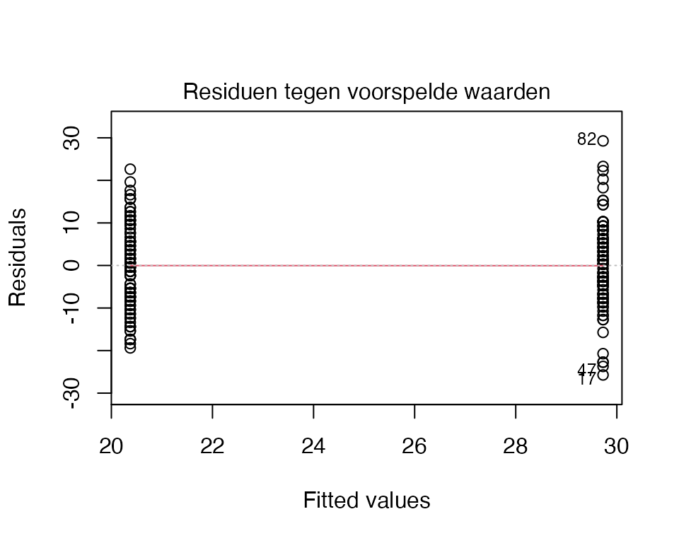
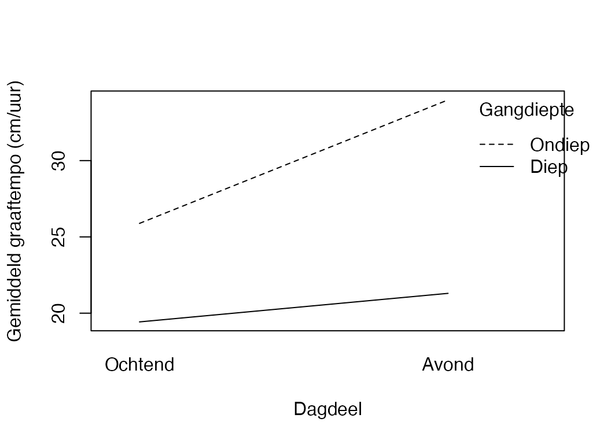

Mollen zijn gek op tunnels graven. Ondergronds, ergens tussen de wortels, hield de mol bij hoe snel zijn collega’s groeven. 198 mollen had hij langs zijn nieuwsgierige snorharen voelen schuiven, 198 verschillende — elk één werkuur lang, en bij elk noteerde hij hoeveel centimeter er in dat uur bij kwam. Het is werk, hij houdt het bij.
Bij elke mol noteerde hij ook of die in een ondiepe of een diepe gang zat — diepere bodem is compacter, dat scheelt — en of het ochtend of avond was.
“Maakt het uit hoe diep een mol zit,” mompelde hij, “of het tijdstip van de dag, of allebei?”
De mol kon niet zien. Hij was blind, zoals mollen blind zijn. Maar hij kon goed voelen, en hij kon tellen. Per collega één getal. En nu wilde hij weten: zit er verschil tussen die getallen, en zo ja, waardoor?
Wat de mol berekent heet analysis of varianceANOVA, en je stelt elke keer dezelfde drie vragen aan je gegevens:
Voorspellen de groepen samen iets? — de \(F\)-toets F-test op het hele model, met \(\eta^2\) als hoeveel-zegt-het.
Waar zit het verschil precies? — contrasten en post-hoc-toetsen tussen specifieke groepen of cellen, en bij meerdere factoren ook de interactieinteraction.
Klopt het allemaal wel? — de aannames assumptions: gelijke varianties tussen groepen homogeneity of variance, normaal verdeelde residuen, onafhankelijke observaties.
Note“ANOVA” alleen is een verwarrende naam
Strikt genomen valt vrijwel elke statistiek onder ANOVA óf regressie — variatie ontleden in delen die ergens vandaan komen. Het woord wordt pas concreet als we erbij zeggen welke:
eenweg-ANOVAone-way ANOVA — één groeperende factor;
factorial / meerweg-ANOVAfactorial ANOVA — twee of meer factoren samen, mét interactie;
repeated-measures ANOVARM-ANOVA — binnen één persoon herhaald gemeten (thema 6);
Dit hoofdstuk gaat over de eerste twee — eenweg en meerweg (soms ook factorial). Onthoud: zonder dat extra woord blijft “ANOVA” een te ruime container.
NoteUnivariate — ook al staat het in een MVDA-cursus
Eenweg- en meerweg-ANOVA zijn nog steeds univariate analyses — er is één afhankelijke variabele \(Y\). Het echte multivariate komt pas in thema 5 (MANOVA), waar je meerdere uitkomsten tegelijk vergelijkt. Tot dan: één \(Y\) per analyse.
NoteHet doel van ANOVA is óók voorspellen — maar via groepsgemiddelden, niet \(\hat{Y}\)
In thema 1 (MRA) voorspelden we voor een individu via een vergelijking: \[\hat{Y}_i = b_0 + b_1 X_{1i} + b_2 X_{2i} + \dots\] Bij ANOVA voorspellen we óók — alleen niet voor een individu via continue voorspellers, maar voor een groep via het groepsgemiddelde:
\[\hat{Y}_{g} = \bar{Y}_g\]
Het groepsgemiddelde \(\bar{Y}_g\) is je beste voorspelling voor iedereen in groep \(g\). In de regressie-taal (sommige boeken doen dit expliciet via dummy- of effect-codering) heet dit ook wel de estimated marginal meanEMM: de modelvoorspelling per cel, gemiddeld over de andere factoren als die er zijn.
Onthoud: ANOVA is geen “toetsings-techniek” en MRA geen “voorspellings-techniek” — beide voorspellen, ze gebruiken alleen verschillende voorspelvormen (\(\hat{Y}\) versus \(\bar{Y}_g\)).
NoteHoe dit hoofdstuk leest
Dit hoofdstuk volgt dezelfde drie-laagse structuur als thema 1:
Verhaal-frame — wat de mol doet of denkt.
Algemene vorm — abstract, statistiek-Latijn met Y, factor1, mijn_data.
Voor onze dieren — uitvoerend, met # hekjes en concrete namen.
Plus de antwoorden in zacht groen (collapse), vragen in indigo, leesregels in mauve, alarm in oranje, don’ts in rood. T-vragen vlechten zich tussen de hoofdvragen door om je rekenintuïtie te oefenen.
Werkmaterialen — R-pakketten en functies
Wat de mol uit zijn keukenkastje pakt
Gereedschap
Waar het voor is
Pakket
lm()
Lineair model schatten — ook voor ANOVA
base
Anova(model, type = 3)
ANOVA-tabel met type III sums of squares
car
aov()
Alternatieve ANOVA-fit, handig voor TukeyHSD()
base
aggregate()
Groepsgemiddelden uitrekenen
base
table()
Aantallen per cel
base
leveneTest()
Toets voor gelijke varianties
car
TukeyHSD()
Post-hoc paarsgewijze vergelijkingen
base
etaSquared()
Effectgrootte \(\eta^2\) en \(\eta^2_p\)
lsr
interaction.plot()
Snelle visualisatie van een interactie
base
emmeans()
Estimated marginal means en EMM-uitwerking per niveau
emmeans
WarningVerwarrend! anova(), Anova() en summary() — drie functies, drie tabellen
Bij een gefit lm-object zijn er drie verschillende manieren om naar de modeloutput te kijken, en ze geven niet dezelfde tabel:
Functie
Pakket
Wat geeft het?
Wanneer gebruik je ’m?
summary(m)
base
Coëfficiënten-tabel + \(F\)-toets voor het hele model + \(R^2\). Geen\(SS\).
Snelle blik op coëfficiënten + modelfit. Voor regressie.
anova(m)
base
ANOVA-tabel met Type I SS (sequentieel). Volgorde van termen telt.
Alleen bij gebalanceerd design — of als je expliciet de volgorde-volgorde-test wilt. Bij regressie zelden.
Anova(m, type = 3)
car
ANOVA-tabel met Type III SS (elk effect uniek). Volgorde maakt niet uit.
Standaardkeuze voor ANOVA met ongebalanceerde data — wat in psychologie de norm is.
Praktijk-vuistregel voor dit hoofdstuk: gebruik altijd car::Anova(., type = 3) voor ANOVA-tabellen. Voor de coëfficiënten (\(b\)’s in een regressie-parameterisering, of EMM in factor-parameterisering) blijf je naar summary(m) kijken. anova(m) (kleine letter) gebruik je vrijwel nooit in dit boek — pas op dat je ’m niet per ongeluk typt en denkt dat het werkt.
Bijvalletje:Anova() (hoofdletter, car) eist options(contrasts = c("contr.sum", "contr.poly")) voor correcte Type III hoofdeffecten bij ongebalanceerde data. Die regel staat al boven in het script — laat ’m staan.
NoteWaarom Type III en niet Type I?
Bij een gebalanceerd design (gelijke aantallen per cel) maakt het niet uit: alle types geven hetzelfde antwoord. Maar zodra het ongebalanceerd is — wat in psychologisch onderzoek vrijwel altijd zo is — wijken Type I, II en III sums of squares uit elkaar. Type III geeft elke voorspeller zijn unieke bijdrage onafhankelijk van de invoervolgorde, en is daarmee de standaardkeuze voor de meeste APA-rapportages. Daarom de regel options(contrasts = c("contr.sum", "contr.poly")) bovenaan: die zorgt dat Anova(., type = 3) de juiste antwoorden geeft.
Notatie — symbolen voor ANOVA
NoteSleutelsymbolen in dit hoofdstuk
In dit werkboek zie je telkens dezelfde notatie:
\(\mu_g\) — het werkelijke gemiddelde van groep \(g\) in de populatie. Onbekend; dit is wat we willen weten. Hypothesen worden hierover geformuleerd: \(H_0: \mu_1 = \mu_2 = \dots = \mu_k\), “in de populatie zijn alle groepsgemiddelden gelijk.”
\(\bar{Y}_g\) — het steekproef-gemiddelde van groep \(g\). Wat aggregate() of mean() je geeft. Een schatter van \(\mu_g\).
\(\hat{Y}_g = \bar{Y}_g\) — de modelvoorspelling voor elk dier in groep \(g\).
\(F\) — de toetsstatistiek; verhouding van between-group variantie tot within-group variantie.
\(df_b, df_w\) — de twee bijhorende vrijheidsgraden: tussen (\(k - 1\), met \(k\) groepen) en binnen (\(N - k\)).
\(\eta^2\)eta-squared — proportie totale variantie die de factor verklaart: een effectgrootte.
\(\eta^2_p\)partial eta-squared — proportie variantie die de factor verklaart na aftrek van de andere factoren. In factorial designs verschilt \(\eta^2_p\) van \(\eta^2\).
\(\omega^2\)omega-squared — een minder bevooroordeelde variant van \(\eta^2\); in tentamens niet altijd verplicht maar wel netjes om te kennen.
In hypothese-toetsen praten we altijd over de populatie — dus daar staat altijd \(\mu_g\). In rapportages over wat je gevonden hebt, schrijf je \(\bar{Y}_g\) of \(M\).
TipVuistregels zijn afspraken, geen wetten
De drempels in dit werkboek zijn breed gangbare conventies — maar niet universeel:
\(n_{\max}/n_{\min} \geq 1.5\) samen met geschonden Levene maakt de \(F\)-toets onbetrouwbaar — overweeg dan Welch-ANOVA (oneway.test(..., var.equal = FALSE)) als alternatief;
bij herhaalde metingen (thema 6): toets sphericity met Mauchly en pas zo nodig de Greenhouse-Geisser-correctie toe op de vrijheidsgraden.
Verschillende vakgroepen, docenten en handboeken kiezen iets andere getallen (\(\eta^2 \approx .05\) als groot in heel kleine studies; strengere Levene-kritiek alleen bij hoog ongebalanceerde designs). Als je voor een tentamen of opdracht werkt, check altijd in je eigen college-sheets welke drempels je docent of vakgroep hanteert. Wij volgen hier consistent één set, maar dat is een keuze, geen natuurwet.
NoteCode in dit hoofdstuk — wat moet je kunnen typen?
Code is standaard open als je hem moet kunnen typen op het R-practical-tentamen: lm(), aov(), Anova(., type = 3), leveneTest(), etaSquared(), TukeyHSD(), interaction.plot(), emmeans(), contrast(), aggregate(), table(). Code die alleen ter illustratie dient — verkenning, plot-decoratie — staat ingeklapt met een knopje “Toon code”. Klap hem open als je nieuwsgierig bent; voor het tentamen hoef je hem niet te reproduceren.
Volgorde-regel. Alle library()-aanroepen bovenaan je script — vóór elk gebruik van een functie. Schuif je library(car) per ongeluk onder een Anova()- of leveneTest()-regel, dan klaagt R “could not find function”. Vervelend, en altijd dezelfde oplossing: pakket boven gebruik.
TipWerkproces — opmerkingen_jij.R ernaast
Tijdens het werken loop je per definitie tegen dingen aan: een commando dat anders werkt dan je verwacht, een zin in het werkboek die niet helemaal klopt, een vraag waarvan je achteraf denkt “die had hier eigenlijk moeten staan.” Open daarvoor een leeg R-script naast je werkbestand, noem het bijvoorbeeld opmerkingen_jij.R, en typ daar al je shit in — letterlijke citaten, regelnummers, tijdstempels, je eigen vraag. Het script wordt niet gerund; het is je kantlijn. Lever het in bij Ben (per mail of in de gedeelde map) en de volgende werkboek-versie wordt iets minder ruk.
2.0 Project- en datavoorbereiding
De mol bewaart zijn aantekeningen netjes
Open de meegestuurde projectmap (02_variantieanalyse/) en dubbelklik op 02_variantieanalyse.Rproj. Daarmee staat je werkomgeving klaar: paden kloppen, RStudio kent de juiste werkmap. De data ligt al in data/, de helper-functies in functions/. Niets te installeren als de vier pakketten (car, lsr, emmeans, tidyverse) op je computer staan; anders één keer:
Per geobserveerde mol drie waarden: gang_diepte (ondiep/diep), dagdeel (ochtend/avond), en graaftempo (in cm/uur). gang_diepte en dagdeel zijn al factor-variabelen — R weet dat het categorieën zijn, geen getallen.
Onze setup zet options(contrasts = c("contr.sum", "contr.poly")). Dit is een technische voorwaarde voor car::Anova(., type = 3) om correcte hoofdeffecten te berekenen bij ongebalanceerde designs. Met R’s default contr.treatment zou Anova(type = 3) foutieve hoofdeffect-getallen geven. Voor de inhoudelijke interpretatie maakt het niets uit — F-toetsen, p-waarden, \(\eta^2/\eta^2_p\) en EMM zijn identiek tussen beide; alleen de coëfficiënten in summary(lm) worden anders gecodeerd. Onthoud: zet deze regel boven aan je script bij Type-III ANOVA.
2.1 Eénweg ANOVA
De mol vergelijkt twee groepen
“Eerst,” zei de mol, “kijk ik alleen naar de gang-diepte. Maakt het uit of ik in een ondiepe of in een diepe gang zit?”
NoteVoor je gaat rekenen — vijf vragen aan jezelf
Het stappenplan van thema 1, nu uitgebreid met stap 5: de techniek-keuze.
Wie of wat wordt er gemeten?\(198\) verschillende mollen, elk één werkuur lang geobserveerd.
Wat wordt er gemeten?Drie variabelen per mol: gang_diepte, dagdeel, en graaftempo (cm/uur).
Onafhankelijk of afhankelijk?Onderzoeksvraag (deze deelvraag): voorspelt gang_diepte het graaftempo? Dan is graaftempo afhankelijk (\(Y\)), gang_diepte onafhankelijk (\(X\)).
Meetniveau van elke variabele?graaftempo is interval (cm/uur). gang_diepte is nominaal (twee categorieën). dagdeel is nominaal (twee categorieën).
Welke techniek? Doorloop de beslisboom:
flowchart TD
A[Hoeveel afhankelijke<br/>variabelen?] -->|één| B[Y meetniveau?]
A -->|meerdere| Z[MANOVA<br/><i>thema 5</i>]
B -->|interval| C[X-en meetniveau?]
B -->|binair| D[Logistic regression<br/><i>thema 4</i>]
C -->|alleen interval| E[Multiple regression<br/><i>thema 1</i>]
C -->|alleen nominaal| F[ANOVA<br/><i>dit thema</i>]
C -->|gemengd| G[ANCOVA<br/><i>thema 3</i>]
style F fill:#faf3e2,stroke:#c9a05a,stroke-width:2px
NoteBens pijltjes-overzicht — alle MVDA-technieken in één tabel
Dezelfde keuze, anders genoteerd. Lees als predictor(en) (meetniveau) → DV(s) (meetniveau):
#
Predictor(en)
DV(s)
Techniek
dich |X|
|Y| int
\(t\)-toets
nom 3+lvl |X|
|Y| int
éénweg ANOVA
1
int |X X …|
|Y| int
MRA — thema 1
2
nom |X X|
|Y| int
factorial ANOVA — thema 2
3
nom + int |X C|
|Y| int
ANCOVA — thema 3
4
bo(in) |X|
|Y| bin
LRA — thema 4
5
nom |X|
|Y₁ Y₂ …| int
MANOVA — thema 5
6
within-subject momenten
|Y₁ Y₂ Y₃ Y₄| int
RMA — thema 6
7
indirect via \(M\)
\(X \to M \to Y\) pad
Mediation — thema 7
\(Y\) is interval (graaftempo), \(X\) is nominaal (gang_diepte). Antwoord: ANOVA. Bij twee categorieën is dat technisch hetzelfde als een \(t\)-toets met gelijke variantie, maar we doen het via lm() zodat we straks naadloos kunnen uitbreiden naar twee factoren.
T1 — Eenweg, tweeweg of niets?
Drie miniatuur-onderzoeken — pen-en-papier
NoteVraag T1 — Pen-en-papier
Voor elk onderzoek: bepaal aantal afhankelijke variabelen, het meetniveau van \(X\) en \(Y\), en kies dan de techniek.
a)De bever vergelijkt drie burcht-types — modder, hout, gemengd — op damlengte (m). Bij \(50\) bevers één meting per dier. Welke techniek?
b)Een klinisch psycholoog vergelijkt drie therapie-types (CGT / EMDR / wachtlijst) en twee leeftijd-categorieën (jong-volwassen / ouder dan \(40\)) op symptoom-vermindering (schaal \(0\)–\(100\)). Bij \(120\) cliënten. Welke techniek?
c)Een HR-team bekijkt drie afdelingen (sales / R&D / support) op zowel werktevredenheid (schaal \(1\)–\(10\)) als ervaren werkdruk (schaal \(1\)–\(10\)). Bij \(90\) medewerkers, beide tegelijk. Welke techniek?
CautionAntwoord T1 — open na je eigen poging
a) Eén afhankelijke (\(Y =\) damlengte, INT) en één onafhankelijke met drie groepen (NOM). \(\Rightarrow\)eenweg-ANOVA.
b) Eén afhankelijke (\(Y =\) symptoom-vermindering, INT) en twee onafhankelijke factoren (NOM × NOM). \(\Rightarrow\)tweeweg-ANOVA (meerweg / factorial). Je krijgt dan twee hoofdeffecten + hun interactie.
c)Twee afhankelijke variabelen tegelijk (werktevredenheid én werkdruk). Geen ANOVA meer: \(\Rightarrow\)MANOVA (thema 5).
2.1.a Inspectie en groepsgemiddelden
Voordat de mol gaat toetsen, kijkt hij naar wat er feitelijk in de groepen zit.
Algemene vorm. Tellingen per groep en groepsgemiddelden van de uitkomstvariabele:
table(mijn_data$factor) # aantallen per groepaggregate(Y ~ factor, data = mijn_data, FUN = mean) # groepsgemiddelden
Voor onze dieren.
# Aantal mollen per gang_diepte-groep.table(mol_werkdag$gang_diepte)
ondiep diep
99 99
# Gemiddeld graaftempo per gang_diepte-groep.aggregate(graaftempo ~ gang_diepte, data = mol_werkdag, FUN = mean)
a) Hoeveel mollen zitten er in elke gang_diepte-groep? Is het design gebalanceerd?
b) Wat zijn de groepsgemiddelden? Welke groep graaft sneller, en hoe groot is het ruwe verschil?
CautionAntwoord 2.1 — open na je eigen poging
In gewone woorden.
In de ondiep-groep zitten 99 mollen, in de diep-groep 99. Op de marginale telling exact gelijk; binnen de cellen — daar zien we straks dat de cel-aantallen wel iets uit elkaar lopen.
Het gemiddelde tempo in de ondiepe gang (\(\bar{Y}_{\text{ondiep}} = 29.73\)) ligt hoger dan in de diepe (\(\bar{Y}_{\text{diep}} = 20.37\)). Een ruw verschil van \(9.36\) cm/uur.
APA-stijl.
De marginale aantallen waren gelijk (\(n_{\text{ondiep}} = 99\); \(n_{\text{diep}} = 99\)); de cel-aantallen verschilden licht (zie 2.2). In ondiepe gangen groef de mol gemiddeld sneller (\(M = 29.73\) cm/uur) dan in diepe gangen (\(M = 20.37\) cm/uur).
T2 — \(F\) als ratio van twee varianties
NoteVraag T2 — Pen-en-papier
De \(F\)-toets in een eenweg-ANOVA is geen mysterie: het is een verhouding tussen twee varianties.
c)\(F = 4331 / 98.68 = 43.89\). Straks zie je in de Type-III-output: \(F(1, 196) = 43.89\), \(p < .001\). Bingo.
Inzicht.\(F\) vraagt: “is de spreiding tussen de groepsgemiddelden groot ten opzichte van de spreiding binnen de groepen?” Als groepen weinig verschillen ten opzichte van wat individuen al onderling verschillen, valt \(F \approx 1\).
2.1.b Aannamechecks
ANOVA leunt op drie aannames:
Normaal verdeelde residuen binnen elke groep — bij grote \(n\) minder kritisch (centrale limietstelling).
Gelijke varianties tussen groepenhomogeneity of variance — getoetst met Levene. Komt in thema 3 terug bij ANCOVA: ook daar toetsen we of de varianties van \(Y\) over de factor-niveaus ongeveer gelijk zijn, met dezelfde leveneTest()-functie.
Onafhankelijke observaties — een design-vraag, niet een data-toets. Herhaalde metingen op één dier? Dan moet je naar thema 6.
Algemene vorm.
# Levene's toets voor gelijke varianties (de belangrijkste check)leveneTest(Y ~ factor, data = mijn_data)# Visueel: residual plot van het lm-objectplot(lm(Y ~ factor, data = mijn_data), which =1)
Voor onze dieren.
# Levene: zijn de varianties tussen de twee groepen ongeveer gelijk?leveneTest(graaftempo ~ gang_diepte, data = mol_werkdag)
Levene's Test for Homogeneity of Variance (center = median)
Df F value Pr(>F)
group 1 0.0825 0.7742
196
m_diepte <-lm(graaftempo ~ gang_diepte, data = mol_werkdag)# `sub.caption = ""` haalt de auto-ondertitel met de modelformule weg.plot(m_diepte, which =1, sub.caption ="",caption ="Residuen tegen voorspelde waarden")

NoteVragen 2.1
c) Is de aanname van gelijke varianties geschonden? Rapporteer Levene.
d) Wat zie je in de residual plot — een rustige horizontale band, of iets verdachts?
CautionAntwoord 2.1 — open na je eigen poging
In gewone woorden.
De Levene-toets is niet significant (\(F(1, 196) = 0.08\), \(p = .77\)): we kunnen niet aantonen dat de varianties verschillen, dus de aanname van gelijke varianties houdt stand.
De residual plot toont twee verticale puntenwolken (één per groep), met vergelijkbare spreiding en zonder uitwaaiering. Geen rode vlaggen.
APA-stijl.
De aanname van gelijke varianties was houdbaar, \(F(1, 196) = 0.08\), \(p = .77\). Visuele inspectie van de residual plot wees niet op afwijkingen van homoscedasticiteit.
NoteRobuustheid van \(F\) — wanneer mag je doorgaan
De \(F\)-toets verdraagt heel wat. Twee getallen om te onthouden, één regel voor de richting:
Normaliteit — \(F\) is robuust tegen niet-normaal verdeelde residuen zolang \(n \geq 15\) in elke groep. Onder die grens helpt de centrale limietstelling onvoldoende; dan: Kruskal-Wallis als one-way alternatief.
Homoscedasticiteit — \(F\) is robuust tegen ongelijke varianties zolang \(n_{\max}/n_{\min} \leq 1.5\). Voor een echt probleem moeten beide gelden: Levene \(p < .05\)én\(n_{\max}/n_{\min} \geq 1.5\). Dan: Brown-Forsythe (one-way) of Welch-ANOVA, of bij factorial designs de richtingsregel hieronder.
Onafhankelijkheid — niet te redden met een correctie; designkeuze + repeated-measures ANOVA (thema 6).
Twee-weg richtingsregel (factorial). Liggen de grootste varianties in de kleinste groepen, dan is \(F\) te liberaal (\(p\)-waarden te klein); in de grootste groepen, dan is \(F\) te conservatief (\(p\)-waarden te groot). Conclusie houdt meestal stand, behalve als \(p\) tussen \(.05\) en \(.01\) ligt (liberaal-context) of tussen \(.05\) en \(.10\) (conservatief-context) — dan met voorzichtigheid rapporteren.
In de woorden van het Exercise Book (p. 42): “When your groups are large enough: don’t worry!”
WarningAlarm: wanneer wordt een geschonden aanname een echt probleem?
Bij ANOVA volstaat de robuustheid van de \(F\)-toets meestal voor lichte schendingen, maar kijk uit als:
Levene significant (geschonden) én sterk ongelijke groepsgroottes (\(n_{\max}/n_{\min} \geq 1.5\)). Dan kan de \(F\)-toets te liberaal of te conservatief worden. Gebruik dan de Brown-Forsythe-correctie (onewaytests::bf.test()) of een Welch-ANOVA (oneway.test(..., var.equal = FALSE)).
Een groep sterk afwijkt van normaliteit bij kleine \(n\) (\(< 15\) per cel). Hier helpt de centrale limietstelling niet meer; overweeg een non-parametrische Kruskal-Wallis.
Onafhankelijkheid is in twijfel (bijv. herhaalde metingen, geclusterde data). De gewone ANOVA is hier kansloos; je hebt repeated measures ANOVA (thema 6) of een mixed model nodig.
Vuistregel: noem altijd dat je hebt gecheckt, en wat je beslist hebt te doen.
NoteEerlijke noot — Levene in de cursus-praktijk
Levene’s toets voor variantie-homogeniteit komt in onze workflow standaard mee — al moet hier opgemerkt: de cursus-lecture geeft expliciet aan “a statistical test for variance equality exists (Levene’s test). However, we do not use it (at least not in MVDA)”, terwijl de antwoord-PDF Levene wel rapporteert. We volgen hier de exercise-praktijk (Levene rapporteren), maar de robuustheid van \(F\) blijft het hoofdcriterium (\(n \geq 15\) + \(n_{\max}/n_{\min} \leq 1.5\) — zie callout hierboven). Bij beide schendingen tegelijk: Brown-Forsythe (one-way) of richtingsregel (factorial).
2.1.c De \(F\)-toets en effectgrootte
Algemene vorm.
mijn_model <-lm(Y ~ factor, data = mijn_data)# Contrasts zoals in de uni-oplossing (Type-III toetsen met sum-to-zero).# Defensief — voor het geval dat een eerder blok de instelling heeft veranderd.options(contrasts =c("contr.sum", "contr.poly"))Anova(mijn_model, type =3) # ANOVA-tabel met F-toetsetaSquared(mijn_model) # eta^2 als effectgrootte
Voor onze dieren.
# Gebruikt 'm_diepte' uit de assumptie-stap hierboven.# Contrasts zoals in de uni-oplossing (Type-III toetsen met sum-to-zero).options(contrasts =c("contr.sum", "contr.poly"))Anova(m_diepte, type =3)
\(\eta^2\) is de proportie totale variantie van \(Y\) die door de factor wordt verklaard. Vuistwaarden:
\(\eta^2 \approx .01\) — klein effect
\(\eta^2 \approx .06\) — middelgroot effect
\(\eta^2 \approx .14\) — groot effect
Houd rekening met je vakgebied: in experimentele psychologie zijn deze vuistmaten realistisch, in toegepaste contexten ligt de lat soms lager.
WarningWat staat er in \(H_0\) — over de steekproef of over de populatie?
De \(F\)-toets in Anova(., type = 3) toetst niet iets over de mollen die je hebt gemeten — die kun je gewoon aflezen. Hij toetst iets over de mollen die je niet hebt gemeten: de hele populatie waaruit deze steekproef komt. Schrijf de nulhypothese daarom altijd in populatie-taal:
\[H_0: \mu_{\text{ondiep}} = \mu_{\text{diep}}\]
— “in de populatie van alle mollen verschillen ondiepe en diepe gangen niet in graaftempo”. Niet \(\bar{Y}_{\text{ondiep}} = \bar{Y}_{\text{diep}}\) — dat is over je 198 mollen, en die zijn meetbaar ongelijk (\(29.73\) versus \(20.37\)). Eerstejaars-val: \(H_0\) schrijven met steekproefgemiddeldes erin. Steekproef = data, populatie = uitspraak.
WarningTaligheid — let op causale werkwoorden
Twee veilige formuleringen voor het gevonden effect:
“Mollen in ondiepe gangen graven gemiddeld \(9.36\) cm/uur sneller dan mollen in diepe gangen” — vergelijking tussen groepen, observationeel.
“Het verschil in gemiddeld graaftempo tussen ondiepe en diepe gangen is \(9.36\) cm/uur” — beschrijving van het verschil, geen oorzaak.
Wat je niet mag zeggen zonder experimentele opzet: “diepe gangen vertragen de mol”, “door de diepte daalt het tempo”, “ondiepe gangen veroorzaken sneller graven”. Dat zijn causale werkwoorden — die mag je pas gebruiken als je studie-opzet ze rechtvaardigt (manipulatie, randomisatie, voor-en-na-meting). De mol-data is een momentopname; geen ingreep, geen tijd-as. Mol-keuze voor diepe of ondiepe gang kan zelf met andere kenmerken samenhangen die het tempo verklaren — een derde-variabele-val.
TipSudoku met je ANOVA-tabel — SS, df, MS en F uit de output halen
Anova(m_diepte, type = 3) print Sum Sq, Df, F en Pr(>F). Het MS-getal (mean square) staat er niet — maar dat is gewoon \(SS/df\). Met die identiteiten vul je de hele sudoku-tabel terug:
Cel
Formule
Voor het mol-model
\(SS_b\) (between)
uit Anova() regel “gang_diepte”
\(4331\)
\(SS_w\) (within / Residuals)
uit Anova() regel “Residuals”
\(19341\)
\(SS_T\)
\(SS_b + SS_w\)
\(23672\)
\(df_b\)
\(k - 1\) (groepen − 1)
\(2 - 1 = 1\)
\(df_w\)
\(N - k\)
\(198 - 2 = 196\)
\(df_T\)
\(N - 1\)
\(197\)
\(MS_b\)
\(SS_b / df_b\)
\(4331 / 1 = 4331\)
\(MS_w\)
\(SS_w / df_w\)
\(19341 / 196 = 98.68\)
\(F\)
\(MS_b / MS_w\)
\(4331 / 98.68 \approx 43.89\) ✓
\(\eta^2\)
\(SS_b / SS_T\)
\(4331 / 23672 = .183\) ✓
Tentamenvraag-format: je krijgt een halve tabel en moet de rest invullen. Wie de identiteiten kent (\(SS_T = SS_b + SS_w\), \(MS = SS/df\), \(F = MS_b/MS_w\), \(\eta^2 = SS_b/SS_T\)) komt overal uit zonder iets uit het hoofd te leren. Sudoku.
NoteVragen 2.1
e) Is het effect van gang_diepte statistisch significant? Rapporteer \(F\), \(df\), \(p\) en \(\eta^2\).
f) Is het effect inhoudelijk groot, middelgroot of klein?
g) Wat is je voorlopige conclusie over de mol’s vraag?
CautionAntwoord 2.1 — open na je eigen poging
In gewone woorden.
Het effect van gang_diepte is duidelijk aanwezig. De \(F\)-toets geeft \(F(1, 196) = 43.89\) met \(p < .001\) — ruim onder de drempel van \(.05\), dus statistisch significant.
De effectgrootte is \(\eta^2 = .183\): groot (\(\geq .14\)).
Voorlopige conclusie: gang_diepte maakt veel uit. In een ondiepe gang graaft de mol gemiddeld bijna tien centimeter per uur sneller dan in een diepe gang, en dat past bij wat je biologisch zou verwachten — diepere bodem is compacter. Maar pas op: dit is een eenweg-analyse die dagdeel negeert. Wat als dagdeel ertoe doet, en het diepte-effect verschilt tussen ochtend en avond? Dat zoeken we uit in 2.2.
APA-stijl.
Een eenweg-ANOVA toonde een significant en groot effect van gang_diepte op het graaftempo, \(F(1, 196) = 43.89\), \(p < .001\), \(\eta^2 = .183\). In ondiepe gangen (\(M = 29.73\) cm/uur) groef de mol gemiddeld \(9.36\) cm/uur sneller dan in diepe gangen (\(M = 20.37\) cm/uur).
T3 — \(\bar{Y}_g\) als voorspelling
NoteVraag T3 — Pen-en-papier
Bij ANOVA is de modelvoorspelling voor elk dier het gemiddelde van zijn groep:
\[\hat{Y}_i = \bar{Y}_{g(i)}\]
Voor de mol-data zijn de groepsgemiddelden \(\bar{Y}_{\text{ondiep}} = 29.73\) en \(\bar{Y}_{\text{diep}} = 20.37\) cm/uur.
a) Een mol heeft gang_diepte = ondiep. Wat is \(\hat{Y}\) voor die mol?
b) Een andere mol heeft een werkelijk graaftempo van \(35\) cm/uur in een diepe gang. Wat is zijn residu \(e_i = Y_i - \hat{Y}_i\)?
c) In de regressievertaling van deze ANOVA met dummy-codering (ondiep = 0, diep = 1) zou je krijgen: \[\hat{Y}_i = b_0 + b_1 \cdot \text{diep}_i\] Wat zijn \(b_0\) en \(b_1\) in deze parameterisering?
CautionAntwoord T3 — open na je eigen poging
a)\(\hat{Y} = \bar{Y}_{\text{ondiep}} = 29.73\) cm/uur. Dat is je beste voorspelling voor élke mol in die groep — niets meer, niets minder.
b)\(e = 35 - 20.37 = 14.63\) cm/uur.
c)\(b_0 = \bar{Y}_{\text{ondiep}} = 29.73\) (intercept = referentie-groep). \(b_1 = \bar{Y}_{\text{diep}} - \bar{Y}_{\text{ondiep}} = 20.37 - 29.73 = -9.36\) (verschil tussen groepen — diep ligt \(9.36\) cm/uur lager). Dat \(b_1\) — het verschil tussen twee groepsgemiddelden — is precies waar de \(F\)-toets met één voorspeller op toetst. Met contr.sum (sum-to-zero, voor Type III) krijg je andere \(b\)’s, maar dezelfde voorspellingen \(\hat{Y}_g\) en dezelfde \(F\).
Inzicht. Eenweg-ANOVA is een lineair regressiemodel met één gecodeerde factor. De \(F\)-toets in Anova(., type = 3) is in dit geval gewoon de gekwadrateerde \(t\)-toets op \(b_1\).
2.2 Tweeweg ANOVA — gang_diepte én dagdeel
De mol voegt een tweede vraag toe
“Maar wat,” vroeg de mol zich af, “als het diepte-effect ’s avonds anders is dan ’s ochtends? Dan is gang_diepte alleen geen eerlijk verhaal als ik dagdeel negeer.”
Dat is wat factorial ANOVA doet: twee (of meer) nominale factoren tegelijk, plus hun interactie interaction. Een interactie betekent: het effect van factor A is niet hetzelfde voor alle niveaus van factor B. Het effect van A op zichzelf — gemiddeld over de niveaus van B — heet het hoofdeffectmain effect van A.
In dit hoofdstuk volgen we een conventie: factor A is de rij-factor, factor B is de kolom-factor. Bij de mol: \(A = \text{gang\_diepte}\) (rijen) en \(B = \text{dagdeel}\) (kolommen). Die zelfde A=rij, B=kolom-afspraak gebruiken we straks bij de olifant en bij de dassen.
TipEerst \(2 \times 2\), dán groter — een leervolgorde
Een factorial design heeft minstens twee factoren met elk twee of meer niveaus. De kleinst mogelijke factoriële opzet is \(2 \times 2\): vier cellen, twee hoofdeffecten en één interactie. Daarmee zie je exact hetzelfde patroon dat in een \(2 \times 3\) of \(3 \times 4\) design speelt — alleen overzichtelijker.
Daarom de mol-data eerst in \(2 \times 2\) (gang_diepte × dagdeel): hier ontstaat het hele begrip interactie in vier zinnen. Bij de olifant verderop kruipen we naar \(2 \times 3\), en straks bij de dassen een design met meer niveaus. Vuistregel voor jezelf: als je een nieuwe techniek leert, begin met het kleinste voorbeeld waarin het patroon nog werkt. Bij multipele regressie is dat twee voorspellers (niet drie), bij ANOVA is dat \(2 \times 2\). Pas als je daar geen moeite mee hebt, schaal je op.
2.2.a Cell means
# Aantallen per cel (= combinatie van gang_diepte x dagdeel)table(mol_werkdag$gang_diepte, mol_werkdag$dagdeel)
ochtend avond
ondiep 52 47
diep 49 50
# Gemiddelden per celaggregate(graaftempo ~ gang_diepte * dagdeel, data = mol_werkdag, FUN = mean)
a) Welke combinatie van gang_diepte en dagdeel scoort het hoogst? Welke het laagst?
b) Is het verschil tussen ondiep en diep even groot in de ochtend als in de avond? Wat zegt dat over een mogelijke interactie?
CautionAntwoord 2.2 — open na je eigen poging
In gewone woorden.
De combinatie ondiep + avond scoort het hoogst (\(M = 33.98\) cm/uur). De diep + ochtend-cel scoort het laagst (\(M = 19.43\)).
In de ochtend is het verschil tussen ondiep (\(25.88\)) en diep (\(19.43\)) modest (\(\Delta = 6.46\)). In de avond is dat verschil veel groter (\(33.98\) vs \(21.30\), \(\Delta = 12.68\)). Dat is een teken van interactie: het effect van gang_diepte is groter in de avond dan in de ochtend.
APA-stijl.
Inspectie van de celgemiddelden suggereerde een interactie tussen gang_diepte en dagdeel: in de avond lag het tempo in ondiepe gangen (\(M = 33.98\) cm/uur) ruim \(12\) cm/uur hoger dan in diepe gangen (\(M = 21.30\)), terwijl dat verschil in de ochtend kleiner was (\(M_{\text{ondiep}} = 25.88\); \(M_{\text{diep}} = 19.43\); \(\Delta \approx 6.5\)).
T4 — Interactie tekenen
NoteVraag T4 — Pen-en-papier
Hieronder vier mini-tabellen met cel-gemiddelden voor een \(2 \times 2\) design (factor A heeft twee niveaus \(A_1, A_2\); factor B heeft twee niveaus \(B_1, B_2\)). Voor elk geval: wat zie je — alleen hoofdeffect \(A\), alleen hoofdeffect \(B\), alleen interactie, of zowel hoofd- als interactie-effect?
Geval
\(A_1 B_1\)
\(A_1 B_2\)
\(A_2 B_1\)
\(A_2 B_2\)
(i)
4
6
4
6
(ii)
4
6
6
4
(iii)
4
4
6
6
(iv)
4
5
6
9
a) Schets voor elk geval de interactieplot in je hoofd: x-as \(A\), twee lijnen voor \(B\). Welk geval heeft parallelle lijnen, en welke snijdende of uiteenwijkende lijnen?
b) Welk geval is een kruis-interactie (lijnen kruisen)? En een spreiding-interactie (lijnen waaieren uit, kruisen niet)?
CautionAntwoord T4 — open na je eigen poging
(i): hoofdeffect van \(B\) alleen (\(B_2 > B_1\) voor beide \(A\)-niveaus, even groot verschil). Lijnen parallel, niet horizontaal.
(ii): alleen interactie. Geen overall hoofdeffecten (gemiddelden over \(A\): 5 en 5; over \(B\): 5 en 5), maar de richting van het \(B\)-effect flipt tussen \(A_1\) en \(A_2\). Lijnen kruisen. Klassieke kruis-interactie.
(iii): hoofdeffect van \(A\) alleen. Lijnen parallel en horizontaal (geen \(B\)-effect).
(iv): zowel hoofdeffecten als interactie. Beide hoofdeffecten positief, en in \(A_2\) is het \(B\)-effect groter dan in \(A_1\). Lijnen waaieren uit zonder te kruisen — spreiding-interactie.
Vuistregel. Parallelle lijnen \(\Rightarrow\) geen interactie. Niet-parallelle lijnen \(\Rightarrow\) interactie. Hoeveel niet-parallel zegt iets over de grootte van het interactie-effect; of de toets significant is hangt ook af van \(N\).
2.2.b Het tweeweg-model en de plot
Algemene vorm.
mijn_model <-lm(Y ~ factor1 * factor2, data = mijn_data)# Contrasts zoals in de uni-oplossing (Type-III toetsen met sum-to-zero).options(contrasts =c("contr.sum", "contr.poly"))Anova(mijn_model, type =3)etaSquared(mijn_model)interaction.plot(x.factor = mijn_data$factor1,trace.factor = mijn_data$factor2,response = mijn_data$Y)
De * in de formule (factor1 * factor2) betekent: zowel beide hoofdeffecten als hun interactie meenemen. Schrijf je factor1 + factor2, dan krijg je alleen de hoofdeffecten — geen interactie.
Voor onze dieren.
# Levene voor de vier-cellen-versie.leveneTest(graaftempo ~ gang_diepte * dagdeel, data = mol_werkdag)
Levene's Test for Homogeneity of Variance (center = median)
Df F value Pr(>F)
group 3 0.696 0.5555
194
m_factorial <-lm(graaftempo ~ gang_diepte * dagdeel, data = mol_werkdag)# Contrasts zoals in de uni-oplossing (Type-III toetsen met sum-to-zero).options(contrasts =c("contr.sum", "contr.poly"))Anova(m_factorial, type =3)
# Interactieplot: x-as is dagdeel (kolom-factor B),# lijnen voor gang_diepte (rij-factor A).# Tijdelijke factoren met hoofdletter-niveaus voor leesbare as- en# legend-labels — onderliggende data blijft ongewijzigd..dagdeel_lbl <-factor(tools::toTitleCase(as.character(mol_werkdag$dagdeel)),levels = tools::toTitleCase(levels(mol_werkdag$dagdeel))).diepte_lbl <-factor(tools::toTitleCase(as.character(mol_werkdag$gang_diepte)),levels = tools::toTitleCase(levels(mol_werkdag$gang_diepte)))interaction.plot(x.factor = .dagdeel_lbl,trace.factor = .diepte_lbl,response = mol_werkdag$graaftempo,ylab ="Gemiddeld graaftempo (cm/uur)",xlab ="Dagdeel",trace.label ="Gangdiepte")

TipSpiekbrief — vrijheidsgraden en SS-decompositie voor factorial ANOVA
Bij een \(a \times b\) factorial design (factor \(A\) met \(a\) niveaus, factor \(B\) met \(b\) niveaus, \(N\) observaties totaal) decomponeer je de totale SS in vier stukken: hoofdeffect \(A\), hoofdeffect \(B\), interactie \(A \times B\), en error. De vrijheidsgraden lopen mee:
Bron
\(df\)
\(SS\)
\(MS\)
\(F\)
Hoofdeffect \(A\)
\(a - 1\)
\(SS_A\)
\(SS_A / df_A\)
\(MS_A / MS_E\)
Hoofdeffect \(B\)
\(b - 1\)
\(SS_B\)
\(SS_B / df_B\)
\(MS_B / MS_E\)
Interactie \(A \times B\)
\((a-1)(b-1)\)
\(SS_{AB}\)
\(SS_{AB} / df_{AB}\)
\(MS_{AB} / MS_E\)
Error (within)
\(N - a \cdot b\)
\(SS_E\)
\(SS_E / df_E\)
—
Totaal
\(N - 1\)
\(SS_T\)
—
—
Identiteiten — altijd geldig:
\(df_T = df_A + df_B + df_{AB} + df_E\)
\(SS_T = SS_A + SS_B + SS_{AB} + SS_E\)
\(MS = SS / df\) (per regel)
\(F_{\text{effect}} = MS_{\text{effect}} / MS_E\) (drie F’s: één per hoofdeffect, één voor interactie)
Voor de mol (\(a = 2\) gang_diepte, \(b = 2\) dagdeel, \(N = 198\)):
Bron
\(df\)
gang_diepte (\(A\))
\(1\)
dagdeel (\(B\))
\(1\)
gang_diepte × dagdeel (\(A \times B\))
\(1\)
Error
\(194\)
Totaal
\(197\)
Check: \(1 + 1 + 1 + 194 = 197\). ✓
Bij een \(2 \times 3\) design krijg je \(df_A = 1\), \(df_B = 2\), \(df_{AB} = 1 \cdot 2 = 2\), \(df_E = N - 6\). Bij \(3 \times 4\): \(df_A = 2\), \(df_B = 3\), \(df_{AB} = 6\), \(df_E = N - 12\). De formule verandert niet — alleen de getallen.
Het kruispunt — celgemiddelden, marginalen en effecten in één blik
Het kruispunt is waar A en B elkaar ontmoeten. Je ziet er vier paden (de cellen), twee marginal-richtingen (rij en kolom) en het centrale punt waar alles samenkomt (de grand mean). Hieronder twee zienswijzen op dezelfde data — de tabel en het profile plot. Kies wat je het meest helpt.
De 2D-tabel toont elk celgemiddelde plus de marginalen (rij-marg = effect van gang_diepte = factor A; kolom-marg = effect van dagdeel = factor B); de profile plot dezelfde getallen visueel. Probeer steeds heen-en-weer te zien: een rij-vergelijking in de tabel = een verschuiving van de hele lijn-set omhoog/omlaag in de plot; een kolom-vergelijking = een verschuiving links↔︎rechts; interactie = niet-parallelle lijnen.
apa_marginals_table( m_factorial,factor_A ="gang_diepte", # A = rij-factorfactor_B ="dagdeel", # B = kolom-factordata = mol_werkdag,dependent_label ="graaftempo (cm/uur)",factor_A_label ="Gangdiepte",factor_B_label ="Dagdeel",caption ="Mol — graaftempo per cel met EMM-marginalen")
Gangdiepte
Dagdeel
Marginaal B
Ochtend
Avond
Ondiep
25.88 (9.15, 52)
33.98 (9.42, 47)
29.93
Δ Ondiep − Diep
6.46
12.68
—
Diep
19.43 (9.43, 49)
21.30 (10.12, 50)
20.36
Marginaal A
22.66
27.64
25.15
Note. Mol — graaftempo per cel met EMM-marginalen. Cellen tonen M (SD, n) op basis van graaftempo (cm/uur); rij- en kolom-marginalen zijn ongewogen estimated marginal means (EMM); rechtsonder de grand mean. Hoofdeffect Gangdiepte: F(1, 194) = 49.77, p < .001 — H0: alle rij-marginalen gelijk (μA⋅’s gelijk). Hoofdeffect Dagdeel: F(1, 194) = 13.50, p < .001 — H0: alle kolom-marginalen gelijk (μ⋅B’s gelijk). Interactie Gangdiepte × Dagdeel: F(1, 194) = 5.26, p .023 — H0: cel-patronen additief (geen interactie).
De interactie-toets vraagt: “is het verschil tussen \(A_1\) en \(A_2\) ongelijk over de niveaus van \(B\)?” In de kruispunt-tabel zie je dat aan de bold verschilrij: als die getallen onderling verschillen, is er interactie. Als ze ongeveer gelijk zijn, is er geen interactie.
Concreet bij de mol: \(\Delta_{\text{ochtend}} = 6.46\), \(\Delta_{\text{avond}} = 12.68\). Het verschil-tussen-verschillen is \(12.68 - 6.46 = 6.22\). Dát is wat de interactie-toets onderzoekt — al wordt het in \(F\)-vorm gerapporteerd. De interactie-coëfficiënt (\(b_{\text{int}}\)) in een regressie-parameterisering is precies dat verschil-tussen-verschillen, eventueel geschaald met de cel-codering.
Bij een \(3 \times 2\) design (zoals de dassen) zit dezelfde logica in de verschilkolom: de drie cel-verschillen \(\Delta_{\text{zand}}\), \(\Delta_{\text{klei}}\), \(\Delta_{\text{leem}}\) zijn ongelijk \(\Rightarrow\) interactie.
NoteTabel ↔︎ Plot heen-en-weer
Met het kruispunt van hierboven (tabel en plot). Houd de A=rij, B=kolom-conventie aan: \(A_1 = \text{ondiep}\), \(A_2 = \text{diep}\) (rijen); \(B_1 = \text{ochtend}\), \(B_2 = \text{avond}\) (kolommen).
a) Welke twee paden vergelijk je voor het hoofdeffect van \(A\) (gang_diepte)? Schrijf ze op met hun symbool (\(\bar{Y}_{A_1 \cdot}\) etc.).
b) Welke twee paden voor het hoofdeffect van \(B\) (dagdeel)?
c) Op welk punt landt een mol waarvan we alleen weten dat hij in conditie \(B_1\) (ochtend) is geobserveerd? Wat is je beste voorspelling voor het graaftempo?
d) Diezelfde mol, maar nu weten we ook dat hij in een ondiepe gang zat (\(A_1\)). Op welke kruispunt-cel land je nu?
e) Wat zou je in de plot zien als de interactie precies nul was? Schets in woorden.
f) Welke kruispunt-cel valt op in de plot? Klopt dat met de \(F\)-waarde voor de interactie in de tabel?
CautionAntwoord — open na je eigen poging
a) De twee rij-marginalen (laatste kolom van de tabel, Marginaal B) vergelijk je: \(\bar{Y}_{A_1 \cdot}\) (ondiep, marginaal over dagdeel) versus \(\bar{Y}_{A_2 \cdot}\) (diep, marginaal over dagdeel). Concreet: \(29.93\) (ondiep) tegen \(20.36\) (diep) cm/uur.
b) De twee kolom-marginalen (laatste rij, Marginaal A): \(\bar{Y}_{\cdot B_1}\) (ochtend, marginaal over gang_diepte) versus \(\bar{Y}_{\cdot B_2}\) (avond). Concreet: \(22.66\) (ochtend) tegen \(27.64\) (avond).
c) Met alleen \(B_1\) bekend pak je de kolom-marginaal van \(B_1\): \(\hat{Y} = \bar{Y}_{\cdot B_1} = 22.66\) cm/uur.
d) Met zowel\(A_1\) als \(B_1\) bekend pak je de cel zelf: \(\hat{Y} = \bar{Y}_{A_1 B_1} = 25.88\) cm/uur. Voor ondiep-ochtend valt het iets boven de kolom-marginaal van \(B_1\) — dat past bij de extra informatie dat het ondiep was.
e) Bij interactie = nul lopen de lijnen van ondiep en diep parallel — het verschil tussen ochtend en avond zou voor ondiep en diep even groot zijn (bv. beide \(+5\), of beide \(0\)).
f) Vooral het kruispunt ondiep × avond trekt de aandacht: in de avond loopt de ondiep-lijn flink omhoog (van \(25.88\) naar \(33.98\)), terwijl de diep-lijn nauwelijks beweegt (van \(19.43\) naar \(21.30\)). De lijnen lopen niet parallel; in de avond is het diepte-effect dubbel zo groot als in de ochtend. Dat niet-parallel zijn correspondeert met \(F(1, 194) = 5.26\), \(p = .023\) voor de interactie — significant, dus het patroon is niet aan toeval toe te schrijven.
Vuistregel. Hoofdeffect = lijnen samen omhoog of omlaag. Interactie = lijnen niet-parallel. Tabel en plot zijn twee talen voor hetzelfde feit.
NoteVragen 2.2
c) Is de aanname van gelijke varianties geschonden voor de vier cellen? Rapporteer Levene.
d) Welke effecten zijn significant? Rapporteer \(F\), \(df\) en \(p\) voor gang_diepte, dagdeel én interactie.
e) Hoeveel variantie verklaart elk effect (\(\eta^2\) en \(\eta^2_p\))?
f) Wat zie je in de interactieplot? Lopen de lijnen parallel, of niet?
In de Type III ANOVA-tabel: het hoofdeffect van gang_diepte is sterk significant (\(F(1, 194) = 49.77\), \(p < .001\)). Het hoofdeffect van dagdeel is ook significant, en duidelijk kleiner van omvang (\(F(1, 194) = 13.50\), \(p < .001\)). De interactie\(\text{gang\_diepte} \times \text{dagdeel}\) is klein-significant (\(F(1, 194) = 5.26\), \(p = .023\)).
Effectgroottes (we rapporteren primair kale \(\eta^2\), in lijn met de antwoord-PDF; \(\eta^2_p\) ter info erbij): \(\eta^2\) gang_diepte \(.189\) (groot), dagdeel \(.052\) (middelgroot), interactie \(.020\) (klein). Ter vergelijking: \(\eta^2_p\) ligt iets hoger (gang_diepte \(.202\), dagdeel \(.065\), interactie \(.026\)). De volgorde is duidelijk: gang_diepte verklaart veruit het meest, dan dagdeel, dan de interactie als kleinste effect.
In de interactieplot zie je de lijnen voor ondiep en diep niet parallel lopen: de ondiep-lijn stijgt sterker van ochtend naar avond dan de diep-lijn. Dat is precies wat een interactie visueel betekent: de twee factoren werken niet onafhankelijk.
APA-stijl.
Een \(2 \times 2\) tweeweg-ANOVA met gang_diepte en dagdeel als factoren toonde een significant en groot hoofdeffect van gang_diepte, \(F(1, 194) = 49.77\), \(p < .001\), \(\eta^2 = .189\). Het hoofdeffect van dagdeel was eveneens significant, met een middelgrote omvang, \(F(1, 194) = 13.50\), \(p < .001\), \(\eta^2 = .052\). De interactie tussen gang_diepte en dagdeel was klein maar significant, \(F(1, 194) = 5.26\), \(p = .023\), \(\eta^2 = .020\). De aanname van gelijke varianties was houdbaar, \(F(3, 194) = 0.70\), \(p = .56\).
TipWat de mol opmerkte
“Als de interactie significant is, mag ik de hoofdeffecten niet meer in hun eentje interpreteren. Het diepte-effect is in de avond bijna twee keer zo groot als in de ochtend. Eén ongedifferentieerd hoofdeffect rapporteren zou hier liegen — alsof gang_diepte op elk moment van de dag hetzelfde doet.”
T5 — Type I, II, III: maakt het uit?
NoteVraag T5 — Pen-en-papier
In een gebalanceerdbalanced factorial design (gelijke \(n\) per cel) geven Type I, II en III sums of squares Type III sum of squaresidentieke\(F\)-waarden. In een ongebalanceerdunbalanced design (zoals de mol-data — lichtelijk ongebalanceerd, \(n\) varieert van 47 tot 52 per cel, \(n_{\max}/n_{\min} \approx 1.11\)) verschillen ze.
a) Waarom past Type III bij APA-rapportage van de hoofdeffecten in een ongebalanceerd factorial design? (Hint: denk aan “uniek na correctie voor de andere effecten”.)
b) Wat zou er fout kunnen gaan als je per ongeluk Type I gebruikt op ongebalanceerde data en de volgorde van factoren in je lm()-formule wijzigt?
CautionAntwoord T5 — open na je eigen poging
a) Type III rekent voor elke term de unieke bijdrage na correctie voor alle andere termen in het model. Dat correspondeert met de gangbare APA-vraag: “is dit hoofdeffect / deze interactie nog significant als de andere effecten al meegenomen zijn?” Type III geeft de juiste \(F\)-toets bij ongebalanceerde data, mits de contrasten op contr.sum staan.
b) Type I sums of squares zijn sequentieel: de eerste factor krijgt al zijn variantie, de tweede alleen wat overblijft, en zo verder. In een ongebalanceerd design verandert daardoor het resultaat als je Y ~ A + B schrijft of Y ~ B + A. Twee onderzoekers zouden zonder dat ze het doorhebben verschillende \(F\)- en \(p\)-waarden voor dezelfde data rapporteren. Type II en Type III zijn invariant onder volgorde-veranderingen; Type III bij voorkeur omdat hij ook de interactie correct corrigeert.
TipVrijheidsgraden in een \(I \times J\) factorial design
Bij twee factoren met \(I\) niveaus (factor \(A\)) en \(J\) niveaus (factor \(B\)), en \(N\) totaal observaties:
Verifieer bij de fluittoon-data straks. Olifant (\(I = 2\) geslacht, \(J = 3\) wind, \(N = 134\)): \(df_A = 1\), \(df_B = 2\), \(df_{AB} = 2\), \(df_w = 134 - 6 = 128\), \(df_{\text{total}} = 133\). Check zo dadelijk in Extra 2A of de tweede df van elke \(F\)-toets inderdaad \(128\) is.
2.2.c De interactie interpreteren — EMM per niveau van de andere factor
Wanneer de interactie significant is, ga je terug naar de cell means en beschrijf je het patroon zo concreet mogelijk. De cursus-route is: estimated marginal means per niveau van de andere factor (emmeans(model, ~ A | B)), aangevuld met de cell means uit het kruispunt en de interactieplot. Geen aparte simple-effects-toetsen; die term gebruiken we hier niet.
WarningHoofdeffecten bij een significante interactie — gekwalificeerd, niet weggelaten
Een hoofdeffect (bv. “ondiepe gangen leveren gemiddeld meer cm/uur dan diepe”) is een uitspraak over de rij-marginalenmarginal mean — het gemiddelde over alle \(B\)-condities. Maar als de interactie significant is, bestaat dat marginal-gemiddelde uit ongelijke patronen: het verschil tussen ondiep en diep is niet hetzelfde in de ochtend als in de avond.
De cursus-conventie is helder:
Rapporteer alle drie de toetsen (\(F\), \(df\), \(p\), \(\eta^2\)) voor hoofdeffect \(A\), hoofdeffect \(B\), en de interactie. Niets weglaten.
Bij een significante interactie: voeg de zin “deze hoofdeffecten worden gekwalificeerd door een significante interactie” toe (in het Engels: “qualified by” — de vaste formulering uit het Exercise Book). Het hoofdeffect is dan dus geen zelfstandige conclusie meer.
Werk de interactie inhoudelijk uit via de estimated marginal means per niveau van de andere factor (emmeans(model, ~ A | B)) — niet via aparte simple-effects-toetsen, die term gebruiken we hier niet. Plus de cell means uit het kruispunt en de interactieplot.
Concreet voorbeeld: stel het verschil ondiep − diep is \(+6\) in de ochtend en \(-2\) in de avond. Het marginal-verschil is \(+2\) (gemiddeld over dagdelen). Een hoofdeffect-toets met \(p < .05\) rapporteer je wel, maar de inhoudelijke conclusie komt uit de cell-patronen — daar zien we dat ondiep alleen ’s ochtends echt voor ligt; in de avond zijn ze gelijk of zelfs omgekeerd. Dat is wat de interactie zegt.
Bron-formulering: het Exercise Book (p. 51, p. 54) gebruikt consequent “qualified by” voor deze relatie. Onthoud die uitdrukking voor je APA-zin.
NoteWat ANOVA vergelijkt: EMM, niet descriptives
Bij een ongebalanceerd design lopen twee soorten gemiddelden uit elkaar:
Gewogen marginal mean (descriptives): \(\bar{Y}_{i \cdot}^{\text{gewogen}} = \sum_j n_{ij} \bar{Y}_{ij} / n_{i \cdot}\). De cel-grootte \(n_{ij}\) weegt mee. Wat je krijgt als je aggregate() of mean() op de raw data toepast.
Ongewogen marginal mean (EMM, estimated marginal mean): \(\bar{Y}_{i \cdot}^{\text{ongewogen}} = \frac{1}{J} \sum_j \bar{Y}_{ij}\). Elke cel krijgt gelijke weeg, ongeacht \(n_{ij}\). Wat emmeans() rapporteert.
Bij balanced (alle \(n_{ij}\) gelijk): de twee zijn identiek. Bij unbalanced: ze divergeren — soms minimaal, soms substantieel. ANOVA met Type III SS toetst altijd de EMM-verschillen — dat zijn de “schone” effecten waarbij elke cel-conditie gelijke invloed heeft op het marginal-gemiddelde, ongeacht hoeveel observaties er toevallig in zaten.
Concreet: stel je hebt \(n_{\text{ondiep}} = 100\) mollen in een ondiepe gang (waarvan 80 in conditie A, 20 in B) en \(n_{\text{diep}} = 20\) mollen in een diepe gang (waarvan 5 in A, 15 in B). De descriptives-mean van A trekt zwaar naar de ondiep-conditie-A (80 van de 85 observaties komen daar vandaan). De EMM van A is gewoon \((\bar{Y}_{\text{ondiep,A}} + \bar{Y}_{\text{diep,A}})/2\) — een eerlijke vergelijking ongeacht de mix.
Daarom: rapporteer in een ANOVA-context EMM voor marginal-effecten, niet de descriptives-tabel. emmeans(model, ~ factor_A) geeft je die direct.
# EMM (ongewogen, gelijke weeg per cel).emmeans(m_factorial, ~ gang_diepte)
NOTE: Results may be misleading due to involvement in interactions
gang_diepte emmean SE df lower.CL upper.CL
ondiep 29.9 0.960 194 28.0 31.8
diep 20.4 0.958 194 18.5 22.3
Results are averaged over the levels of: dagdeel
Confidence level used: 0.95
In de mol-data is het verschil bescheiden — het design is lichtelijk ongebalanceerd (\(n_{\max}/n_{\min} \approx 1.11\)), dus de twee soorten gemiddelden divergeren maar een fractie (\(\bar{Y}^{\text{gewogen}}_{\text{ondiep}} = 29.73\) tegenover \(\text{EMM}_{\text{ondiep}} = 29.93\)). Bij sterk ongebalanceerde designs kan dat verschil groot worden — en dan rapporteer je de EMM, niet de descriptives.
# Estimated marginal means per cel — EMM-uitwerking per niveau.# Effect van dagdeel binnen elk niveau van gang_diepte:emm <-emmeans(m_factorial, ~ dagdeel | gang_diepte)emm
g) Beschrijf in eigen woorden — niet via de cijfers, maar via wat de mol doet — wat de interactie betekent.
h) Bij welke gang_diepte is het effect van dagdeel significant (EMM-vergelijking per niveau van gang_diepte)?
CautionAntwoord 2.2 — open na je eigen poging
In gewone woorden (g). In een ondiepe gang verschilt het tempo flink tussen ochtend en avond — ’s avonds graaft de mol daar duidelijk sneller. In een diepe gang maakt het dagdeel nauwelijks uit; de compactere bodem laat zich niet door tijd-van-de-dag overhalen. Het effect van dagdeel hangt dus af van waar hij zit.
Een mogelijke (speculatieve!) interpretatie: in losse, ondiepe grond profiteert hij van de avondkoelte of van het nachtritme; in compacte, diepe bodem wordt het tempo gelimiteerd door de bodem zelf, niet door zijn dagschema.
EMM-vergelijking per niveau (h). Bij ondiep is het verschil tussen ochtend en avond significant (\(t(194) = -4.22\), \(p < .001\), een verschil van \(-8.09\) cm/uur — ochtend trager dan avond). Bij diep is het verschil niet significant (\(t(194) = -0.98\), \(p = .33\), verschil \(\approx -1.87\) cm/uur). Het significante interactie-effect zit dus vooral in de ondiep-cellen.
APA-stijl.
De significante interactie weerspiegelde dat het effect van dagdeel op het graaftempo afhing van gang_diepte. In ondiepe gangen lag het tempo in de avond (\(M = 33.98\)) circa \(8\) cm/uur boven dat in de ochtend (\(M = 25.88\)), en dat verschil was significant (\(t(194) = -4.22\), \(p < .001\)); in diepe gangen werd geen significant dagdeel-verschil gevonden (\(M_{\text{avond}} = 21.30\); \(M_{\text{ochtend}} = 19.43\); \(t(194) = -0.98\), \(p = .33\)).
ImportantDon’t: post-hoc tests doen zonder significante \(F\)
Wanneer je \(k\) groepen vergelijkt en de overall \(F\) niet significant is, moet je niet alsnog Tukey of een ander post-hoc draaien om “te zien of er ergens toch een verschil zit”. Dat verhoogt je Type-I-foutrisico enorm. De \(F\)-toets is je gatekeeper: opent hij de deur, dan mag je naar binnen om te kijken welke paren verschillen. Sluit hij hem, dan is het stop.
Uitzondering: in factorial designs kun je per significant hoofdeffect of significante interactie post-hoc gaan kijken — niet over de hele tabel, alleen waar het ANOVA-bewijs het rechtvaardigt.
NoteMultiple testing — waarom we corrigeren
Als je \(k\) paren tegelijk vergelijkt op \(\alpha = .05\), dan is de kans dat minimaal één vals-positief is, gelijk aan \(1 - (1 - .05)^k\). Voor 3 paren is dat \(1 - .95^3 \approx .14\). Voor 6 paren al \(.26\). Daarom: corrigeer.
Methoden:
Bonferroni: deel \(\alpha\) door \(k\). Streng, conservatief, simpel. Toets: \(\alpha_{\text{adj}} = .05/k\).
Holm-Bonferroni: sequentieel — sorteer p-waarden, kleinste eerst. Toets eerste tegen \(\alpha/k\), tweede tegen \(\alpha/(k-1)\), etc. Krachtiger dan Bonferroni.
Tukey HSD: speciaal voor alle paarsgewijze vergelijkingen na ANOVA. Balanceert FWER en power.
Dunnett: alleen versus controle-groep — meer power dan Tukey omdat minder paren.
Scheffé: voor willekeurige contrasten (ook lineaire combinaties). Strengst, breedste familie.
Vuistregel: Tukey voor “alle paren”. Bonferroni als veilige default voor andere multiple-testing-situaties. Holm als je Bonferroni-power te krap vindt.
T6 — \(\eta^2\) versus \(\eta^2_p\)
NoteVraag T6 — Pen-en-papier
In een tweeweg-ANOVA print etaSquared() twee kolommen: eta.sq (\(\eta^2\)) en eta.sq.part (\(\eta^2_p\)).
b) Bij de mol-tweeweg-ANOVA: \(\text{SS}_{\text{gang\_diepte}} = 4525\), \(\text{SS}_{\text{dagdeel}} = 1227\), \(\text{SS}_{\text{interactie}} = 479\), \(\text{SS}_{\text{residu}} = 17637\). Bereken \(\eta^2\) en \(\eta^2_p\) voor de interactie. (Tip: bij \(\eta^2\) is de noemer de som van alle effect-SS plus residu-SS; in een gebalanceerd design \(\approx \text{SS}_{\text{totaal}}\).)
CautionAntwoord T6 — open na je eigen poging
a)\(\eta^2_p\) heeft alleen “effect + residu” in de noemer, terwijl \(\eta^2\) ook andere effecten in de noemer meeneemt (groter). Voor dezelfde teller geeft dat \(\eta^2_p \geq \eta^2\). Bij eenweg-ANOVA geldt \(\eta^2 = \eta^2_p\) (geen andere effecten); bij meerweg-ANOVA loopt het uiteen.
b) Totale SS = \(4525 + 1227 + 479 + 17637 = 23868\).
Kale \(\eta^2\) (primair — wat de antwoord-PDF rapporteert):\(\eta^2_{\text{interactie}} = 479 / 23868 = 0.0201 = .020\).
Inzicht. Waarom rapporteer je dan welke? In de antwoord-PDF is kale \(\eta^2\) consequent het primaire getal — die matcht ook direct Cohens vuistwaarden (\(.01/.06/.14\)). \(\eta^2_p\) is gangbaar in SPSS-output (SPSS toont alleen \(\eta^2_p\)) en bij meta-analyses. Wij geven hier beide; in modelantwoorden zetten we \(\eta^2\) voorop en noemen \(\eta^2_p\) secundair.
Eta-squared versus partial eta-squared in beeld — Venn-diagrammen
Waarom partial eta-squared kan optellen tot meer dan een
Hoofdrekenbaar voorbeeld om het verschil scherp te krijgen. Stel je hebt een tweeweg-ANOVA met \(\text{SS}_A = 30\), \(\text{SS}_B = 20\), \(\text{SS}_{AB} = 10\), \(\text{SS}_w = 40\), en dus \(\text{SS}_{\text{totaal}} = 100\).
\(\eta^2\): één totaal-cirkel van \(100\%\) met vier disjuncte segmenten. Elk effect krijgt zijn eigen plak van de hele taart.
\(\eta^2\) — vier disjuncte segmenten binnen één totaal-cirkel (\(\text{SS}_{\text{totaal}} = 100\)).
\(\eta^2_p\): drie aparte mini-Venns — per effect tel je alleen dát effect plus residu mee. De andere effecten worden weggepoetst voor die berekening, alsof ze er voor deze effectgrootte even niet waren.
Som: \(.96\) — bijna over de \(100\%\) heen. In andere voorbeelden kan \(\sum \eta^2_p\) wél boven \(1\) uitkomen; dat is geen fout, het laat zien dat elk effect zijn eigen “submap” krijgt waarin de andere effecten zijn weggehaald.
\(\eta^2_p\) — per effect een eigen mini-Venn (effect + residu). Andere effecten worden weggepoetst.
Toon code (illustratie, niet tentamen-stof)
par(mfrow =c(1, 1))
TipDe boodschap
\(\eta^2\) deelt één taart van \(100\%\) over alle effecten plus residu — de proporties tellen netjes op tot \(\leq 1\). Dit is wat de antwoord-PDF rapporteert en wat hier je primaire effectgrootte is. \(\eta^2_p\) vraagt per effect: “hoeveel verklaar ik als de andere effecten er even niet waren?” Daardoor mag de som boven \(1\) uitkomen — handig voor vergelijking met SPSS-output of meta-analyses, maar in modelantwoorden secundair.
2.2.d Balanced versus unbalanced — herkennen en wat het ertoe doet
Het balanced/unbalanced-onderscheid is geen hoofddoel van dit thema, maar het is wel iets om te kunnen herkennen en kort uitleggen. Sommige opleidingen leggen er nadruk op (vroeger was het zelfs een tentamenklassieker), andere stippen het alleen aan. Check je eigen college-sheets om te weten waar jouw docent op rekent.
NoteBalanced versus unbalanced — wat is het verschil?
Een factorial design is balanced als de aantallen per cel gelijk zijn (\(n_{ij}\) overal gelijk). Bij balanced designs:
de hoofdeffecten en interactie zijn orthogonaal — onafhankelijk van elkaar;
de drie effecten kunnen “zonder elkaar” gemeten worden — Type I, II en III sums of squares geven identieke\(F\)-waarden.
Bij unbalanced designs (verschillende cel-grootten) overlappen de effecten in het verklaarde-variantie-deel. Daarom maakt het uit hoe je de SS toekent (Type I/II/III) — en welke \(F\) je rapporteert. In de praktijk is bijna elk psychologisch onderzoek lichtelijk ongebalanceerd (drop-outs, niet-respons), dus Type III is meestal de juiste keuze.
TipHoe herken je een gebalanceerd design — twee routes
Route 1 (telling). Tel de cellen met table(factor1, factor2). Alle cellen gelijk in \(n\)? Balanced.
Route 2 (truc). Bij balanced geldt \(n_{ij} = n_{i \cdot} \cdot n_{\cdot j} / N\) voor élke cel — de cel-aantallen zijn precies het product van de marginal counts gedeeld door totaal. Klopt dat niet voor één cel? Dan is het design unbalanced. Handig als je alleen marginal counts hebt.
De werkelijke table() geeft \(52 / 47 / 49 / 50\) — de “verwacht-balanced”-tabel zou \(50.5 / 48.5 / 50.5 / 48.5\) geven. De cijfers liggen dichtbij elkaar maar niet exact gelijk: het mol-design is lichtelijk ongebalanceerd (\(n_{\max}/n_{\min} = 52/47 \approx 1.11\), ruim binnen de \(1.5\)-robuustheidsgrens). Voor de praktijk: Type III aanhouden, EMM rapporteren, en je bent klaar.
Balanced versus unbalanced in beeld — twee Venns
Waar Type I, II, III hetzelfde of verschillend antwoorden
Een hoofdrekenbaar voorbeeld om de twee situaties naast elkaar te zien.
Balanced — twee disjuncte cirkels binnen de totaal-ruimte. \(\text{SS}_A = 30\), \(\text{SS}_B = 20\), geen overlap. Type I, Type II en Type III geven identiek antwoord, want er is geen gedeeld stuk om over te onderhandelen.
Balanced — \(\text{SS}_A = 30\), \(\text{SS}_B = 20\), geen overlap. Type I/II/III: identiek.
Unbalanced — cirkels overlappen: \(\text{SS}_A^{\text{uniek}} = 24\), \(\text{SS}_B^{\text{uniek}} = 16\), en een gedeeld stuk \(\text{SS}_{A \cap B} = 6\).
Type I (volgorde \(A\) eerst): \(A\) krijgt het hele stuk inclusief overlap, \(\text{SS}_A = 24 + 6 = 30\); \(B\) krijgt alleen het unieke deel, \(\text{SS}_B = 16\).
Type I (volgorde \(B\) eerst): \(B\) krijgt overlap mee, \(\text{SS}_B = 16 + 6 = 22\); \(A\) krijgt alleen uniek, \(\text{SS}_A = 24\).
Type III (uniek na correctie voor de ander): beide effecten krijgen alleen hun unieke stuk, \(\text{SS}_A = 24\) en \(\text{SS}_B = 16\). De overlap “hoort bij niemand” — die wordt niet aan \(A\) of \(B\) toegekend.
Hand-rek-regel: \(30 = 24 + 6\), \(22 = 16 + 6\). De overlap reist mee met wie als eerste binnenstapt in Type I.
Unbalanced — uniek \(A = 24\), uniek \(B = 16\), overlap \(A \cap B = 6\). Type I (volgorde-afhankelijk) versus Type III (alleen uniek).
TipWat de plaatjes zeggen
Bij balanced raken de cirkels elkaar niet — er valt niets te onderhandelen, dus alle SS-types vallen samen. Bij unbalanced is er een gedeeld stuk; wie dat krijgt hangt af van de SS-keuze. Type III zegt: “geen van beide” — alleen de unieke bijdragen. Vandaar dat Type III de standaard is voor APA-rapportage in ongebalanceerde designs.
Extra 2A — De fluittoon van de olifant
Een tweede onderzoek, een nieuwe gast
Tegen het einde van de middag kwam de olifant langs. “Mol,” zei hij, “ik heb ook een onderzoekje gedaan. Ik wilde weten hoe snel dieren reageren als ik een fluittoon laat horen — en of het uitmaakt of er wind staat.”
De olifant heeft drie wind-condities (geen wind, licht briesje, harde wind), honderdvierendertig dieren, en hij hield bij of ze mannetjes of vrouwtjes waren. Per dier mat hij hoe lang het duurde voor het reageerde op de fluittoon (in milliseconden).
Dit is een \(2 \times 3\) factorial design — meer levels op één van de factoren. De analyse is structureel hetzelfde als 2.2, maar met één factor die drie niveaus heeft: dat geeft de mogelijkheid (en bij significantie: noodzaak) van post-hoc tests om uit te zoeken welke wind-niveaus van elkaar verschillen.
leveneTest(reactietijd ~ geslacht * wind, data = fluittoon_reactie)
Levene's Test for Homogeneity of Variance (center = median)
Df F value Pr(>F)
group 5 0.1941 0.9643
128
m_olifant <-lm(reactietijd ~ geslacht * wind, data = fluittoon_reactie)# Contrasts zoals in de uni-oplossing (Type-III toetsen met sum-to-zero).options(contrasts =c("contr.sum", "contr.poly"))Anova(m_olifant, type =3)
Hetzelfde patroon als bij de mol, nu voor het 2 × 3-design met de olifant.
apa_marginals_table( m_olifant,factor_A ="geslacht",factor_B ="wind",data = fluittoon_reactie,dependent_label ="reactietijd (ms)",factor_A_label ="Geslacht",factor_B_label ="Wind",caption ="Olifant — reactietijd per cel met EMM-marginalen")
Geslacht
Wind
Marginaal B
Geen wind
Licht briesje
Harde wind
Mannetje
3097.84 (2644.86, 25)
4056.79 (2350.14, 21)
6843.62 (2150.03, 24)
4666.08
Δ Mannetje − Vrouwtje
441.46
-1491.04
2005.16
—
Vrouwtje
2656.38 (2501.64, 21)
5547.83 (2466.97, 25)
4838.46 (2732.14, 18)
4347.56
Marginaal A
2877.11
4802.31
5841.04
4506.82
Note. Olifant — reactietijd per cel met EMM-marginalen. Cellen tonen M (SD, n) op basis van reactietijd (ms); rij- en kolom-marginalen zijn ongewogen estimated marginal means (EMM); rechtsonder de grand mean. Hoofdeffect Geslacht: F(1, 128) = 0.55, p .46 — H0: alle rij-marginalen gelijk (μA⋅’s gelijk). Hoofdeffect Wind: F(2, 128) = 16.20, p < .001 — H0: alle kolom-marginalen gelijk (μ⋅B’s gelijk). Interactie Geslacht × Wind: F(2, 128) = 5.45, p .005 — H0: cel-patronen additief (geen interactie).
# Tukey HSD over de wind-factor — mag alleen omdat# het hoofdeffect van wind significant is.TukeyHSD(aov(reactietijd ~ wind, data = fluittoon_reactie))
a) Welke effecten zijn significant? Rapporteer \(F\), \(df\), \(p\) en \(\eta^2\) per effect.
b) Welke wind-paren verschillen significant volgens Tukey HSD?
c) Beschrijf de interactie in woorden: hoe verandert het effect van wind tussen mannetjes en vrouwtjes?
CautionAntwoord Extra — open na je eigen poging
In gewone woorden. Levene niet significant (\(F(5, 128) = 0.19\), \(p = .96\)): de cellen hebben gelijke varianties.
Het hoofdeffect van wind is zeer sterk: \(F(2, 128) = 16.20\), \(p < .001\), \(\eta^2 = .200\) — een groot effect. Het hoofdeffect van geslacht is niet significant: \(F(1, 128) = 0.55\), \(p = .460\), \(\eta^2 = .002\). De interactie is wel significant: \(F(2, 128) = 5.45\), \(p = .005\), \(\eta^2 = .062\) — middelgroot.
Tukey HSD over wind: licht briesje versus geen wind — significant (\(p < .001\), verschil \(\approx 1971\) ms). Harde wind versus geen wind — significant (\(p < .001\), verschil \(\approx 3088\) ms). Harde wind versus licht briesje — niet significant (\(p = .100\)). Het grote contrast zit dus tussen geen wind en de twee wind-condities; de twee wind-condities onderling verschillen minder duidelijk.
De interactie: bij geen wind zijn mannetjes en vrouwtjes vergelijkbaar (~3098 vs 2656 ms). Bij licht briesje reageren vrouwtjes juist trager dan mannetjes (5548 vs 4057 ms). Bij harde wind zijn de rollen weer omgedraaid: mannetjes reageren nu trager dan vrouwtjes (6844 vs 4838 ms). Het patroon is niet uniform — wind beïnvloedt mannetjes en vrouwtjes anders, en zelfs in tegengestelde richtingen voor verschillende wind-niveaus.
APA-stijl.
Een \(2 \times 3\) tweeweg-ANOVA met geslacht en wind als factoren op reactietijd liet een significant hoofdeffect van wind zien, \(F(2, 128) = 16.20\), \(p < .001\), \(\eta^2 = .200\), en een significante interactie tussen geslacht en wind, \(F(2, 128) = 5.45\), \(p = .005\), \(\eta^2 = .062\). Het hoofdeffect van geslacht was niet significant, \(F(1, 128) = 0.55\), \(p = .460\), \(\eta^2 = .002\). De aanname van gelijke varianties was houdbaar, \(F(5, 128) = 0.19\), \(p = .96\). Tukey-HSD-vergelijkingen over de wind-condities lieten zien dat dieren bij geen wind significant sneller reageerden (\(M = 2896\) ms) dan bij een licht briesje (\(M = 4867\) ms; \(p < .001\)) en bij harde wind (\(M = 5984\) ms; \(p < .001\)). De twee wind-condities verschilden onderling niet significant van elkaar (\(p = .100\)).
T7 — Welke post-hoc, en wanneer?
NoteVraag T7 — Pen-en-papier
In de fluittoon-data is het hoofdeffect van wind (3 niveaus) significant; we kiezen Tukey HSD voor paarsgewijze vergelijkingen.
a) Hoeveel paren wind-condities zijn er om te vergelijken? Hoeveel paren in totaal voor een 4-niveau-factor? (Algemeen: \(\binom{k}{2}\).)
b) Tukey HSD past de \(p\)-waarde aan voor het aantal vergelijkingen — familywise error rateFWER. Wat zou er gebeuren als je in plaats daarvan drie aparte \(t\)-toetsen zou doen, allemaal op \(\alpha = .05\), zonder correctie?
c) Welke andere post-hoc-procedures ken je naast Tukey, en wanneer kies je iets anders?
CautionAntwoord T7 — open na je eigen poging
a) Bij 3 niveaus: \(\binom{3}{2} = 3\) paren (geen-licht, geen-hard, licht-hard). Bij 4 niveaus: \(\binom{4}{2} = 6\) paren. Het aantal explodeert met \(k\).
b) Met drie ongecorrigeerde toetsen op \(\alpha = .05\) stijgt de kans op minstens één Type-I-fout naar \(1 - (1 - .05)^3 \approx .14\). Bij zes toetsen \(\approx .26\). Je vindt veel “significant” door toevallige variatie.
c) De vier kern-procedures, plus Holm als sequentiële variant:
Tukey HSD — voor alle paarsgewijze vergelijkingen na een significant hoofdeffect. Balanceert FWER en power. Gangbare default voor “welke paren verschillen?”. Werkt op aov()-objecten.
Bonferroni — deel \(\alpha\) door het aantal toetsen \(k\). Werkt voor elk multiple-testing-scenario, niet alleen paren. Streng en conservatief, maar simpel uit te leggen. Veilige default als Tukey niet past (bv. niet-paarsgewijze vergelijkingen).
Holm-Bonferroni — sequentiële Bonferroni-variant: sorteer \(p\)-waarden, toets de kleinste tegen \(\alpha/k\), de volgende tegen \(\alpha/(k-1)\), etc. Even streng op de FWER, maar krachtiger dan vanille-Bonferroni. Vrijwel altijd te verkiezen boven gewone Bonferroni.
Scheffé — voor willekeurige contrasten, inclusief lineaire combinaties van groepen, niet alleen paren. Strengst van allemaal omdat de familie het breedst is. Kies hem als je gerichte (maar niet-vooraf-geplande) contrasten wilt toetsen na een significante \(F\).
Dunnett — alleen vergelijkingen met één gekozen controle-groep; behoudt veel power omdat het aantal vergelijkingen kleiner is dan bij Tukey (\(k - 1\) in plaats van \(\binom{k}{2}\)).
Daarnaast: Šidák (iets minder streng dan Bonferroni bij onafhankelijke toetsen), Games-Howell (Tukey-variant bij heteroscedasticiteit) en Benjamini-Hochberg / FDR (controleert false discovery rate i.p.v. FWER, gangbaar bij grote testfamilies). Check je eigen vakgroep welke procedure de voorkeur heeft.
2.A — Eenweg met drie groepen, contrasten en post-hoc
De olifant kwam terug, een paar dagen later. “Mol, ik wil de eenweg-versie zien — alleen wind, drie groepen, geen geslacht. Dat hoort bij de canon.”
Soms is de tweeweg-vraag een omweg en wil je gewoon: één factor met drie of meer niveaus, en dan kijken of er groepsverschillen zijn. We gebruiken dezelfde fluittoon-data, maar nu alleen met wind als factor.
m_wind <-lm(reactietijd ~ wind, data = fluittoon_reactie)# Contrasts zoals in de uni-oplossing (Type-III toetsen met sum-to-zero).options(contrasts =c("contr.sum", "contr.poly"))Anova(m_wind, type =3)
TipWat doet aov() en waarom verschilt dat van lm() plus Anova()?
aov() fit hetzelfde model als lm(), maar print zijn summary() als ANOVA-tabel met Type I SS (sequentieel). Voor eenweg-designs of gebalanceerde tweeweg-designs maakt het niet uit. Voor ongebalanceerde tweeweg-designs gebruik je lm() + Anova(., type = 3). TukeyHSD() werkt alleen op een aov()-object — vandaar dat we voor post-hoc óf aov() óf emmeans() aanroepen.
TukeyHSD(aov(reactietijd ~ wind, data = fluittoon_reactie))
Behalve “alle paren vergelijken” kun je ook gerichte contrasten kiezen. Stel je hebt drie wind-niveaus en je wilt twee specifieke vragen beantwoorden:
Wind versus geen wind — gemiddelde van licht-briesje en harde wind versus geen wind: \(c_1 = (-2, 1, 1)\).
Licht briesje versus harde wind — alleen die twee tegen elkaar: \(c_2 = (0, -1, 1)\).
Twee contrasten zijn orthogonaalorthogonal als \(\sum c_{1k} \cdot c_{2k} = 0\). Bij drie niveaus passen er maximaal \(k - 1 = 2\) orthogonale contrasten in; samen gebruiken ze alle vrijheidsgraden voor de tussen-groepen-variatie. Orthogonale contrasten zijn elkaars onafhankelijke vragen — ze dubbelen niet. Wanneer je deze contrasten van tevoren vastlegt op grond van theorie heten ze geplande contrastenplanned contrasts.
a) Welk contrast is significant, welk niet? Wat zegt dat over de structuur van het wind-effect?
CautionAntwoord 2.A — open na je eigen poging
In gewone woorden. Het contrast wind versus geen wind is sterk significant: dieren reageren bij wind veel trager dan zonder wind. Het contrast licht briesje versus harde wind is óók significant (\(p = .040\)): bij licht briesje reageert men sneller dan bij harde wind. De grote sprong zit tussen geen wind en welke wind dan ook, en daarbinnen is er nóg een kleinere — maar wel detecteerbare — sprong tussen lichte en harde wind.
APA-zin. Twee geplande contrasten lieten zien dat reactietijden in de wind-conditie (licht briesje en harde wind samen) significant verlengd waren ten opzichte van de geen-wind-conditie (\(t(131) = -5.66\), \(p < .001\)). Het tweede contrast — licht briesje versus harde wind — was eveneens significant (\(t(131) = 2.05\), \(p = .042\)), met snellere reacties bij licht briesje dan bij harde wind.
Let op — Tukey vs. geplande contrasten. De Tukey-HSD-vergelijking van licht briesje versus harde wind gaf eerder \(p = .100\) (niet significant). Het geplande contrast op dezelfde paren geeft \(p = .040\) (wel significant). Beide kloppen — ze beantwoorden net iets andere vragen.
Tukey corrigeert voor het feit dat je drie paren tegelijk vergelijkt en zet de drempel hoger om de Type-I-fout over de hele familie binnen \(\alpha = .05\) te houden (familywise error rate, FWER). Geplande contrasten doen die correctie niet, omdat je vooraf — voordat je de data zag — specifiek déze twee onderzoeksvragen formuleerde. Dat is precies hun didactisch nut: gerichte hypotheses kosten minder power dan een blinde paarsgewijze zoektocht.
Welke is “juist”? Beide. Tukey is exploratief-paarsgewijs en streng; geplande contrasten zijn specifiek en a priori. Dit is een leermoment: hetzelfde paar getallen, twee verschillende correctielogica’s, twee verschillende conclusies — en allebei goed te verdedigen, mits je vooraf je strategie hebt vastgelegd.
T8 — Power, \(N\) en het ontwerpen van een ANOVA
NoteVraag T8 — Pen-en-papier
Een onderzoeker ontwerpt een \(2 \times 3\) factorial design. Cohen (1988) suggereert voor \(\eta^2_p \approx .06\) (middelgroot) en \(\alpha = .05\) ongeveer \(25\)–\(30\) observaties per cel om \(.80\) power te halen.
a) Hoeveel proefpersonen totaal heeft hij minimaal nodig?
b) Stel hij heeft \(40\) proefpersonen totaal. Wat zijn zijn opties?
c) Wat is volgens Tabachnick & Fidell (2007) een te ongebalanceerd design? (Vuistregel: \(n_{\max}/n_{\min}\).)
CautionAntwoord T8 — open na je eigen poging
a)\(25\) per cel \(\times 6\) cellen \(= 150\) proefpersonen voor power \(\approx .80\) bij middelgroot effect. Bij \(30\) per cel: \(180\).
b) Met \(40\) totaal in een \(2 \times 3\): gemiddeld \(\sim 7\) per cel. Power voor middelgrote effecten zal richting \(.20\)–\(.30\) gaan. Opties:
Het design vereenvoudigen (bv. één factor weglaten).
Genoegen nemen met alleen grote effecten kunnen detecteren (\(\eta^2_p \geq .14\)).
Een binnen-persoons-design overwegen, waarbij elke proefpersoon alle condities doorloopt — veel hogere power per N (komt in thema 6).
Niet doen: door-toetsen tot je iets vindt en dat rapporteren (\(p\)-hacking).
c) Een vuistregel: bij \(n_{\max}/n_{\min} > 4\) (de grootste cel meer dan vier keer de kleinste) wordt de \(F\)-toets onbetrouwbaar als óók Levene significant is. Ook bij \(n_{\max}/n_{\min} \approx 1.5\) is voorzichtigheid gepast. Tabachnick en Fidell adviseren: balanceer waar je kunt, en als het echt niet kan, gebruik Type III en rapporteer expliciet.
T9 — Welch-ANOVA: wanneer?
NoteVraag T9 — Pen-en-papier
oneway.test() in R doet standaard een Welch-ANOVA — een variant van eenweg-ANOVA die niet aanneemt dat varianties gelijk zijn.
a) In welke twee situaties is Welch beter dan de gewone (Student-)ANOVA?
b) Wat verandert er aan de vrijheidsgraden \(df_w\)? (Hint: niet meer \(N - k\).)
c) Voor de mol-één-weg-vraag (alleen gang_diepte, twee groepen): bij twee groepen is Welch-ANOVA equivalent aan een bekende \(t\)-toets-variant. Welke?
CautionAntwoord T9 — open na je eigen poging
a) Welch is robuust tegen (1) ongelijke varianties en (2) ongelijke groepsgroottes. Beide tegelijk is precies waarbij gewone ANOVA misgaat.
b) Welch berekent een gecorrigeerd \(df_w\) via de Welch-Satterthwaite-formule, dat lager is dan \(N - k\) en niet noodzakelijk een geheel getal. Bij ernstige varianti-ongelijkheid kan \(df_w\) flink dalen — wat conservativer toetst.
c) Bij \(k = 2\) is Welch-ANOVA equivalent aan Welch’s \(t\)-toets (de “ongelijke variantie”-versie van de Student-\(t\)). De Student-\(t\) met var.equal = TRUE en gewone eenweg-ANOVA met \(k = 2\) geven identieke \(p\)-waarden — en dat is gekwadrateerd in \(F\).
T10 — Niet-significante interactie: wat dan?
NoteVraag T10 — Pen-en-papier
Stel je doet een \(2 \times 2\) tweeweg-ANOVA en de interactie is niet significant (\(F(1, 100) = 1.20\), \(p = .270\)). Hoofdeffect \(A\) wel (\(F(1, 100) = 18.50\), \(p < .001\)). Hoofdeffect \(B\) ook (\(F(1, 100) = 9.40\), \(p = .003\)).
a) Mag je nu de hoofdeffecten los interpreteren? Waarom (niet)?
b) Een collega zegt: “Haal de interactie uit het model — een additief model is parsimonieuser en geeft scherpere hoofdeffecten.” Wanneer is dat advies gepast, en wanneer niet?
c) Een andere collega zegt: “Interactie weglaten is gevaarlijk; je verstopt mogelijke kruis-effecten.” Heeft hij gelijk?
CautionAntwoord T10 — open na je eigen poging
a) Ja. Bij niet-significante interactie zijn de hoofdeffecten zinvol los te interpreteren: het effect van \(A\) is voor alle \(B\)-niveaus statistisch hetzelfde (binnen toeval), en omgekeerd. Je rapporteert ze als “het effect van \(A\) was X, ongeacht \(B\).” Dit is precies het tegenovergestelde van een significante interactie.
b) Soms gepast: in een a-priori additief model (theorie zegt dat \(A\) en \(B\) onafhankelijk werken) en bij grote sample-size kan het rapporteren van een additief model schoner zijn. Het werkt minder goed bij kleine samples — een niet-significante interactie betekent niet dat hij afwezig is, alleen dat we hem niet konden detecteren. Bij twijfel: laat hem in het model maar rapporteer: “interactie niet significant; hoofdeffecten konden onafhankelijk worden geïnterpreteerd.”
c) Ten dele. Je verstopt potentieel niets als je de interactie hebt getoetst en niet-significant vond, en rapporteert dat. Je verstopt wel iets als je hem stilletjes weglaat zonder te tonen dat hij niet significant was. Voor de lezer is altijd wenselijk: rapporteer de hele tabel inclusief interactie, en vertel pas in de tekst dat je de hoofdeffecten los interpreteert.
R-spiekblad bij ANOVA
Alle commando’s op één plek
Pakketten en data laden
# Pakketten activeren — één keer per sessie.library(car) # voor Anova(., type = 3) en leveneTest()library(lsr) # voor etaSquared()library(emmeans) # voor estimated marginal means en EMM-uitwerking per niveau# Type III SS vereist sum-to-zero contrasten op factoren.options(contrasts =c("contr.sum", "contr.poly"))# Eerste dataset laden — object 'mol_werkdag' verschijnt vanzelf.load("data/mol_werkdag.RData")# Tweede dataset laden — object 'fluittoon_reactie' verschijnt vanzelf.load("data/fluittoon_reactie.RData")# Snelle inkijk: structuur, factor-niveaus, eerste waarden.str(mol_werkdag)
Verkenning — celtellingen en groepsgemiddelden
# Aantallen per groep (eenweg) of per cel (factorial).table(mol_werkdag$gang_diepte)table(mol_werkdag$gang_diepte, mol_werkdag$dagdeel)# Groepsgemiddelden / cel-gemiddelden van Y.aggregate(graaftempo ~ gang_diepte, data = mol_werkdag, FUN = mean)aggregate(graaftempo ~ gang_diepte * dagdeel, data = mol_werkdag, FUN = mean)
Aannames checken — Levene en residual plot
# Levene's toets voor gelijke varianties.leveneTest(graaftempo ~ gang_diepte, data = mol_werkdag)leveneTest(graaftempo ~ gang_diepte * dagdeel, data = mol_werkdag)# Residual plot van het lm-object.plot(lm(graaftempo ~ gang_diepte, data = mol_werkdag), which =1)
Alternatieven bij geschonden aannames — Welch en Brown-Forsythe
# Welch-ANOVA — robuust tegen ongelijke varianties.oneway.test(graaftempo ~ gang_diepte, data = mol_werkdag, var.equal =FALSE)# Brown-Forsythe — alternatieve robuuste F-toets bij ongelijke varianties.# install.packages("onewaytests") # eerste keeronewaytests::bf.test(graaftempo ~ gang_diepte, data = mol_werkdag)# Kruskal-Wallis — non-parametrisch alternatief bij kleine n + non-normaliteit.kruskal.test(graaftempo ~ gang_diepte, data = mol_werkdag)
Model fitten en samenvatten
# Eenweg-ANOVA via lm() + Anova().m1 <-lm(graaftempo ~ gang_diepte, data = mol_werkdag)# Contrasts zoals in de uni-oplossing (Type-III toetsen met sum-to-zero).# Defensief — herhaal vlak voor elke Type-III-aanroep voor het geval dat# een eerder blok of package-load de instelling heeft veranderd.options(contrasts =c("contr.sum", "contr.poly"))Anova(m1, type =3)etaSquared(m1)# Tweeweg-ANOVA — let op de * voor hoofdeffecten + interactie.# A = gang_diepte (rij-factor), B = dagdeel (kolom-factor).m2 <-lm(graaftempo ~ gang_diepte * dagdeel, data = mol_werkdag)# Contrasts zoals in de uni-oplossing (Type-III toetsen met sum-to-zero).options(contrasts =c("contr.sum", "contr.poly"))Anova(m2, type =3)etaSquared(m2)
Onderaan dit hoofdstuk staan vier korte theorievragen in tentamen-stijl en één mini R-opdracht. Geen Tellegen-frame meer — student-aan-tentamen-modus. Hou de vuistregels uit dit hoofdstuk paraat: \(\eta^2 \geq .14\) groot, \(.06\) middel, \(.01\) klein; Levene \(p < .05\) flagt; Tukey alleen na significant hoofdeffect.
Theorie en handreken
NoteVraag E1 — \(F\)-tabel aflezen
Een bever bestudeert een vergelijking van vier soorten dam-bouwhout (eik / wilg / berk / esdoorn) op damstevigheid (kN/m). Hij rapporteert dit fragment uit een eenweg-ANOVA-tabel.
R
Anova Table (Type III tests)
Response: stevigheid
Sum Sq Df F value Pr(>F)
houtsoort 84.6 3 7.230 0.0002 ***
Residuals 312.0 80
Hoeveel proefdammen (\(N\)) hadden in totaal aan deze studie meegedaan?
\(80\)
\(83\)
\(84\)
\(86\)
CautionAntwoord E1 — open na je eigen poging
c) \(84\).\(df_w = N - k = 80\), met \(k = 4\) groepen, dus \(N = 80 + 4 = 84\).
NoteVraag E2 — eta-squared interpreteren
In een onderzoek bij de uilenwacht naar het effect van lichtsterkte (3 niveaus) op alertheid lezen we: \(F(2, 87) = 6.40\), \(p = .003\), \(\eta^2 = .128\).
Welke conclusie volgt het beste uit deze cijfers?
Het effect is statistisch significant en zeer groot; lichtsterkte verklaart bijna alles.
Het effect is statistisch significant en middelgroot tot groot in inhoudelijke zin; lichtsterkte verklaart \(\sim 13\%\) van de variantie.
Het effect is statistisch niet significant; verder onderzoek nodig.
Eta-squared boven \(.10\) wijst altijd op multicollineariteit.
CautionAntwoord E2 — open na je eigen poging
b) Eta-squared van \(.128\) ligt tussen middel (\(.06\)) en groot (\(.14\)); \(\eta^2\) is letterlijk de proportie variantie verklaard, dus \(\sim 13\%\). Optie a overdrijft, c miskent het significante \(p\), d verwart \(\eta^2\) met VIF.
NoteVraag E3 — interactie-grafiek lezen
Bij de kerkuilen worden \(80\) uilen onderzocht in een \(2 \times 2\) design: veld (open / bos) en maan (volle / nieuwe). Uitkomst: aantal succesvolle vangsten per nacht. De interactieplot ziet er zo uit:
veld = open, maan = volle: \(M = 4.5\)
veld = open, maan = nieuwe: \(M = 4.7\)
veld = bos, maan = volle: \(M = 6.8\)
veld = bos, maan = nieuwe: \(M = 3.1\)
Welke uitspraak past het best bij dit patroon?
Hoofdeffect veld, maar geen interactie.
Hoofdeffect maan, maar geen interactie.
Vooral een interactie: het effect van maan is sterk verschillend in open versus bos.
Geen enkel effect; alle cellen verschillen verwaarloosbaar.
CautionAntwoord E3 — open na je eigen poging
c) In het open veld is het maan-effect klein (\(4.5 \to 4.7\), +\(0.2\)). In het bos juist sterk negatief bij nieuwe maan (\(6.8 \to 3.1\), −\(3.7\)). Lijnen niet parallel \(\Rightarrow\) duidelijke interactie. De marginalen suggereren ook hoofdeffecten, maar bij een sterke interactie zoals deze interpreteer je ze niet los.
NoteVraag E4 — wanneer post-hoc?
Een ecoloog doet een eenweg-ANOVA met vier vegetatie-types als factor en soortenrijkdom als uitkomst. Hij rapporteert: \(F(3, 76) = 1.81\), \(p = .15\), \(\eta^2 = .067\).
Hij overweegt of hij Tukey HSD nu mag draaien om alsnog te zien welke vegetatie-types onderling verschillen.
Wat is het juiste advies?
Ja, want \(\eta^2 = .067\) is middelgroot.
Ja, mits hij Bonferroni-correctie toepast in plaats van Tukey.
Nee: de overall \(F\) is niet significant; post-hoc verhogen het Type-I-foutrisico zonder toetsbasis.
Nee, want bij vier groepen mag je alleen Scheffé gebruiken, niet Tukey.
CautionAntwoord E4 — open na je eigen poging
c) De gangbare conventie: post-hoc-toetsen alleen ná een significant ANOVA-hoofdeffect. Met \(p = .15\) is er geen toetsbasis om verder paren te onderzoeken — dat zou neerkomen op \(p\)-hacking via een achterdeurtje. Een matige \(\eta^2\) kan in theorie wijzen op een te kleine \(N\) (lage power); het juiste antwoord is dan repliceren met meer dieren, niet de huidige data verder uitpluizen.
R-practical opdrachtje
De dassen-burcht
NoteVraag E5 — Mini-ANOVA bij de dassen
Een ecoloog onderzoekt hoe lang dassen ’s nachts foerageren — hun foerageertijd (in minuten) — onder twee factoren: bodem (zand / klei / leem; drie niveaus) en seizoen (zomer / winter; twee niveaus). Bij \(78\) dassen is per dier de gemiddelde foerageertijd vastgelegd, samen met het bodemtype waarop ze hun burcht hebben en het seizoen van meting. De dataset staat in data/dassen_burcht.RData en bevat het object dassen_burcht. Sla je R-commando’s op in één scriptbestand: dassen.R. Gebruik \(\alpha = .05\).
a) Is de aanname van gelijke varianties houdbaar? Rapporteer Levene.
b) Voer een \(3 \times 2\) tweeweg-ANOVA uit (Type III). Welke effecten zijn significant? Rapporteer de toetsstatistiek, de vrijheidsgraden en de p-waarde per effect.
c) Welk effect heeft de grootste \(\eta^2\)? Wat is de inhoudelijke grootte (klein / middel / groot)?
d) Maak een interaction.plot() met bodem op de x-as en lijnen voor seizoen. Beschrijf in één zin het patroon.
CautionAntwoord E5 — open na je eigen poging
load("data/dassen_burcht.RData")leveneTest(foerageertijd ~ bodem * seizoen, data = dassen_burcht)
Levene's Test for Homogeneity of Variance (center = median)
Df F value Pr(>F)
group 5 0.6783 0.6413
72
m_das <-lm(foerageertijd ~ bodem * seizoen, data = dassen_burcht)# Contrasts zoals in de uni-oplossing (Type-III toetsen met sum-to-zero).options(contrasts =c("contr.sum", "contr.poly"))Anova(m_das, type =3)
Anova Table (Type III tests)
Response: foerageertijd
Sum Sq Df F value Pr(>F)
(Intercept) 1083733 1 4288.548 < 2.2e-16 ***
bodem 13676 2 27.059 0.000000001722 ***
seizoen 5496 1 21.749 0.000013946484 ***
bodem:seizoen 2238 2 4.428 0.01536 *
Residuals 18195 72
---
Signif. codes: 0 '***' 0.001 '**' 0.01 '*' 0.05 '.' 0.1 ' ' 1
etaSquared(m_das)
eta.sq eta.sq.part
bodem 0.34377376 0.4307134
seizoen 0.13238695 0.2256226
bodem:seizoen 0.05588776 0.1095272
apa_marginals_table( m_das,factor_A ="bodem",factor_B ="seizoen",data = dassen_burcht,dependent_label ="foerageertijd (min)",factor_A_label ="Bodem",factor_B_label ="Seizoen",caption ="Dassen — foerageertijd per cel met EMM-marginalen")
Bodem
Seizoen
Marginaal B
Zomer
Δ Zomer − Winter
Winter
Zand
96.14 (17.88, 14)
-8.30
104.44 (16.54, 13)
100.29
Klei
116.68 (17.48, 13)
-10.05
126.72 (16.33, 13)
121.70
Leem
115.94 (14.01, 12)
-32.07
148.02 (12.01, 13)
131.98
Marginaal A
109.59
—
126.39
117.99
Note. Dassen — foerageertijd per cel met EMM-marginalen. Cellen tonen M (SD, n) op basis van foerageertijd (min); rij- en kolom-marginalen zijn ongewogen estimated marginal means (EMM); rechtsonder de grand mean. Hoofdeffect Bodem: F(2, 72) = 27.06, p < .001 — H0: alle rij-marginalen gelijk (μA⋅’s gelijk). Hoofdeffect Seizoen: F(1, 72) = 21.75, p < .001 — H0: alle kolom-marginalen gelijk (μ⋅B’s gelijk). Interactie Bodem × Seizoen: F(2, 72) = 4.43, p .015 — H0: cel-patronen additief (geen interactie).
a) De aanname van gelijke varianties is houdbaar (Levene niet significant — zie output).
b) Alle drie de effecten zijn significant: hoofdeffect bodem\(F(2, 72) = 27.06\), \(p < .001\); hoofdeffect seizoen\(F(1, 72) = 21.75\), \(p < .001\); interactie bodem \(\times\) seizoen \(F(2, 72) = 4.43\), \(p = .015\).
c)\(\eta^2_{\text{bodem}} = .344\) is de grootste en valt ver in de “groot”-categorie (\(\geq .14\)). Seizoen is ook groot (\(\eta^2 = .132\)); interactie middelgroot (\(\eta^2 = .056\)).
d) Op zandbodem is het verschil tussen zomer en winter klein; op leem is het verschil substantieel — dassen op leem foerageren in de winter veel langer dan in de zomer. Dat is de interactie die de \(F\)-toets bevestigt.
Een \(3 \times 2\) tweeweg-ANOVA toonde significante hoofdeffecten van bodem, \(F(2, 72) = 27.06\), \(p < .001\), \(\eta^2 = .344\), en seizoen, \(F(1, 72) = 21.75\), \(p < .001\), \(\eta^2 = .132\). De interactie tussen bodem en seizoen was eveneens significant, \(F(2, 72) = 4.43\), \(p = .015\), \(\eta^2 = .056\). De aanname van gelijke varianties was houdbaar volgens Levene’s toets.
Wat blijft liggen
Onderwerpen die buiten dit thema blijven
ANOVA is een groot huis met veel zijdeuren. Wat dit thema je gaf is de hoofdingang — eenweg, tweeweg, interactie, post-hoc, contrasten. Wat hierachter ligt en in dit werkboek niet behandeld wordt:
Robuuste ANOVA — WRS2::t1way en verwante procedures op basis van M-estimators of trimmed means. De Welch-ANOVA in T9 is hiervan een lichte variant; de volledige robust-toolbox blijft hier buiten.
Niet-parametrische alternatieven — Kruskal-Wallis (eenweg) en Friedman (repeated). Worden in de bachelor-statistiek behandeld; we slaan ze hier over omdat ANOVA bij grote \(N\) relatief robuust is.
Permutatie-toetsen — een alternatief inferentie-frame zonder normaliteits-aanname; je herschudt je groepslabels en bouwt zo een empirische nulverdeling.
Mixed-effects modellen — voor geclusterde data (zie de aanname onafhankelijkheid). In thema 6 (RMA) wordt RMA-ANOVA terloops aangewezen als “speciaal geval van een mixed-effects model met random intercept”, maar de bredere aanpak (random slopes, kruisgeneste data, lme4::lmer) komt nergens uitgewerkt voor.
Bayesiaanse ANOVA — een alternatief inferentie-frame waarbij effecten als verdelingen worden geschat. BayesFactor::anovaBF is een toegankelijke ingang.
Effectgrootte voorbij \(\eta^2\) en \(\eta^2_p\) — \(\omega^2\) (minder bias bij kleine steekproeven), generalized \(\eta^2\) (geschikter voor mixed designs).
Power-analyse vooraf — pwr::pwr.anova.test voor sample-size-planning. Belangrijk in onderzoeksmethoden, hier niet behandeld.
Voor verdieping: Tabachnick & Fidell (2007); Wilcox (2017, robust methods); Maxwell, Delaney & Kelley (2017, design and analysis).
Aan het eind van de dag
Toen de zon onderging, schoof de mol zijn aantekeningen onder een wortel.
“En, mol?” vroeg de olifant, die nog even was blijven staan.
“Diepte maakt veel uit,” zei de mol, “en dagdeel ook iets. En het diepte-effect is in de avond groter dan in de ochtend.” Hij dacht even na. “Ik had die laatste niet gemerkt als ik alleen naar gang-diepte had gekeken.”
“En ik,” zei de olifant, “weet nu dat de wind er flink toe doet, en dat het bij sommige wind-condities anders werkt voor mannetjes dan voor vrouwtjes.”
Ze zaten samen. Het werd langzaam donker. Ergens in de verte ritselde een blad.
Verantwoording
Dit werkboek is geschreven voor studenten die variantieanalyse leren via R. De didactische lijnen volgen de gangbare opbouw van Nederlandse universitaire MVDA-cursussen; alle voorbeelden, datasets, vragen en formuleringen in dit hoofdstuk zijn origineel. De gebruikte drempels en formules zijn standaard statistische conventies; verwijzingen naar Cohen (1988) en Tabachnick & Fidell (2007) volgen de gebruikelijke citaatpraktijk in dit veld.